Este é o módulo onde a sua escola se descreve: quem estuda, quem ensina, quando acontece
cada aula e como as notas viram boletim. Você preenche uma vez — e o sistema usa isso o ano inteiro.
1 · Estrutura
O esqueleto do ano
O ano letivo, os cursos, as séries, as disciplinas e o calendário.
2 · Pessoas e turmas
Quem está onde
Professores, salas, turmas, alunos e a grade de horários.
3 · Como a escola avalia
O boletim do seu jeito
Suas regras de aprovação, os tipos de nota e o modelo de boletim.
O que esperar daqui
São 14 passos, e você faz uma vez por ano. Depois disso, só volta aqui no ano que vem.
A ordem já está pronta. Você não precisa decidir por onde começar — cada passo prepara o próximo.
Cada passo diz como saber que deu certo. Você nunca vai ficar na dúvida se terminou ou não.
Dá para parar e voltar quando quiser. No painel, o progresso é lido do que você já cadastrou — não precisa marcar nada.
Nesta trilha nada é irreversível. Pode explorar sem medo: errar custa só o tempo de corrigir. Homologar o período, depois, é o ponto sem volta.
No fim dos 14 passos: o boletim sai com a cara da sua escola, o diário funciona, a frequência
conta certo e os documentos oficiais saem prontos para assinar. A escola fica pronta para o ano inteiro.
Ano 2026
Guia dos 14 passos — comece pelo primeiro
trilha
Próximo passo: criar o Ano Letivo. É a base de tudo — sem ele, nada mais salva corretamente.
Estrutura
Ano Letivocomece por aquinenhum ano letivo cadastradoComo saber que deu certo: Existe um ano letivo com período definido.Abrir▸
Como fazer
Clique em Novo Ano Letivo.
Informe o ano, a data de início e a data de fim.
Escolha a divisão do ano: bimestre, trimestre, semestre ou etapa única.
Marque Ano letivo ativo e salve. Os períodos nascem dessa divisão — não há cadastro separado.
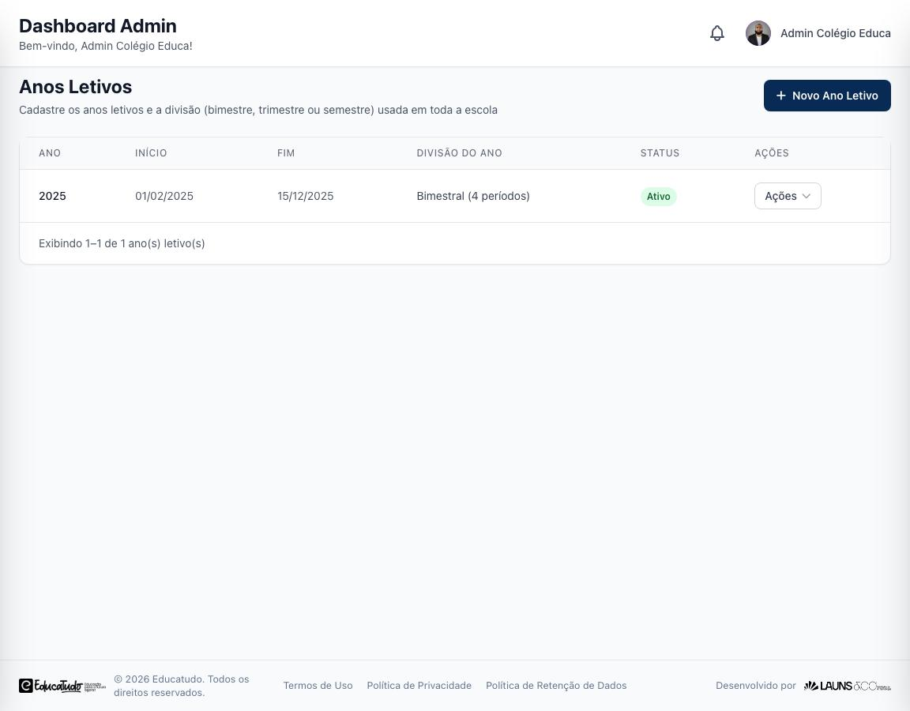
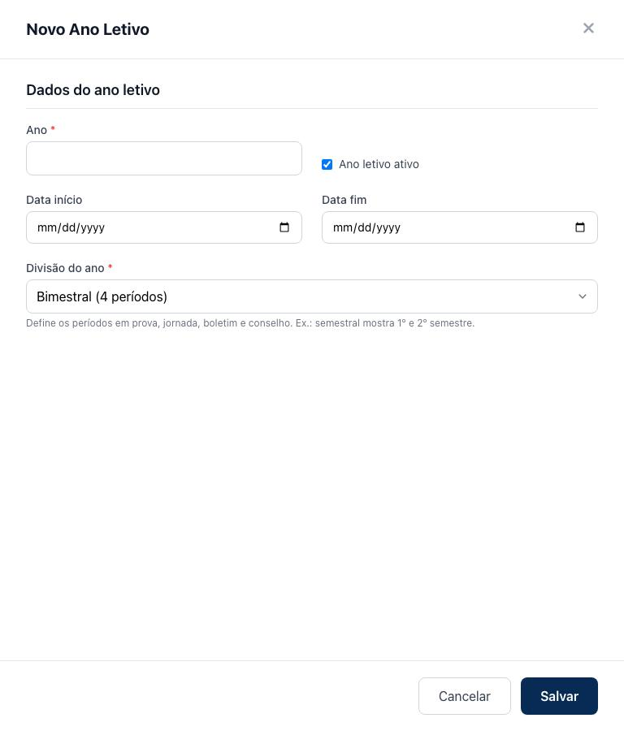
Erros comuns
Esquecer de marcar “ativo” — o ano existe, mas as outras telas não o assumem como corrente.
Errar a divisão do ano. Prova, boletim e fechamento usam essa configuração; mudar depois mexe em tudo que já foi lançado.
Usado depois em: Turmas, matrículas, notas, boletim e fechamento.
Cursos e Sériesnenhum curso cadastradoComo saber que deu certo: Há ao menos um curso. Se ele tiver progressão anual, tem série.Abrir▸
Como fazer
Cadastre o curso (ex.: Ensino Fundamental — Anos Finais).
Dentro dele, cadastre as séries que ele oferece.
Desmarque “Possui série” só para cursos sem progressão anual (curso extra).
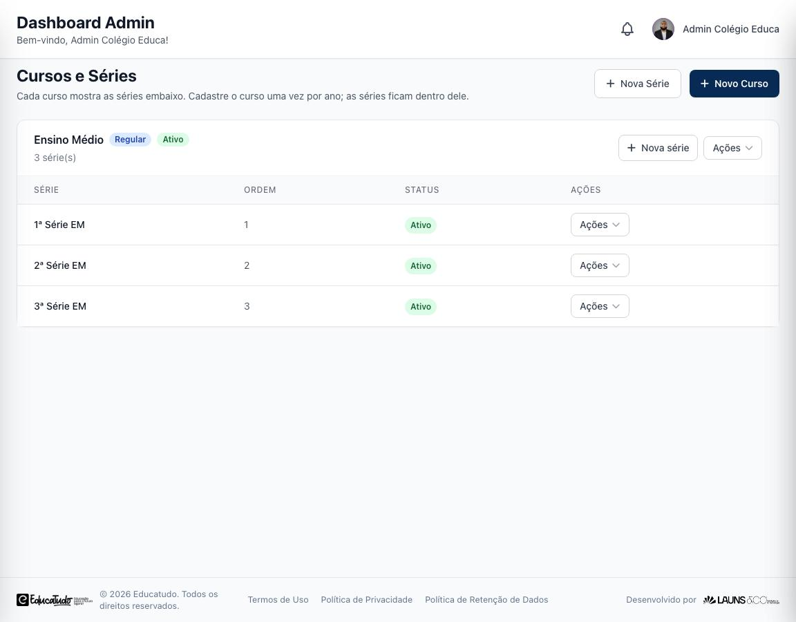
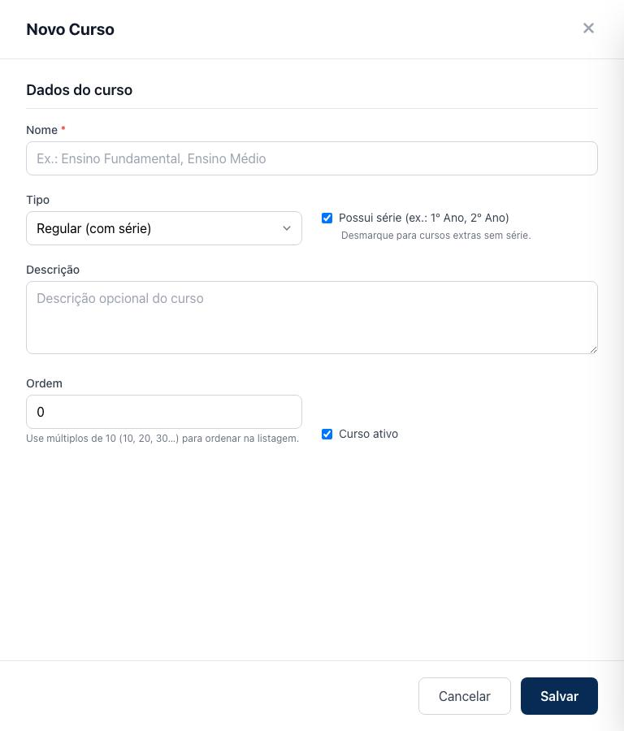
Erros comuns
Usar nome diferente do oficial. Esse nome sai no histórico escolar.
Criar curso regular e esquecer as séries — a matriz não tem onde se apoiar.
Usado depois em: Matriz curricular, turmas e regras de aprovação.
Componentes Curricularesnenhum componente cadastradoComo saber que deu certo: Há componentes ativos para montar a matriz.Abrir▸
Como fazer
Cadastre cada disciplina com nome e sigla — a sigla é o que aparece na grade e no boletim.
Informe a área do conhecimento (usada no censo).
Confira Permite avaliação: marcado para disciplina que recebe nota.
Se a escola junta disciplinas numa área (ex.: Língua Portuguesa), cadastre a área como componente pai e as disciplinas como filhas.
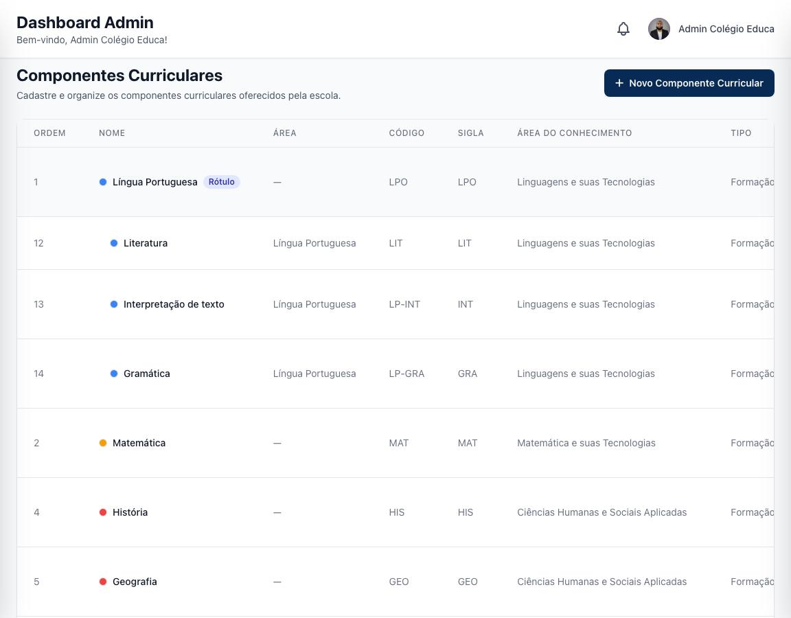
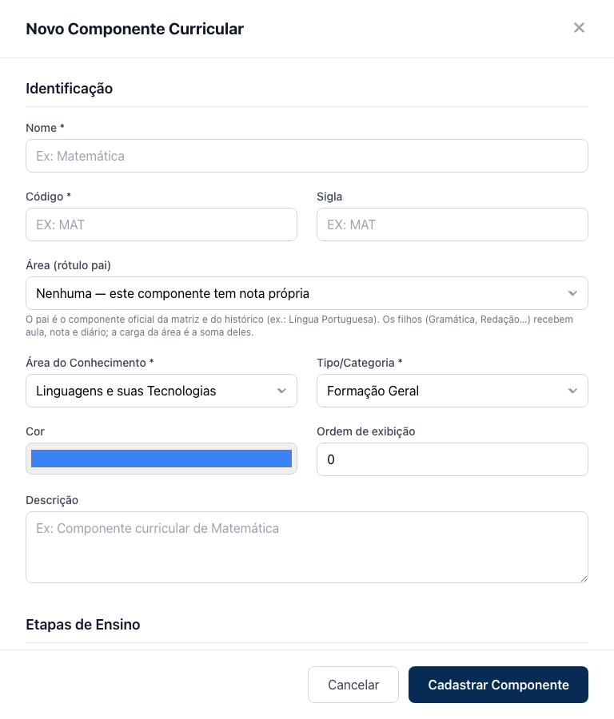
Erros comuns
Cadastrar a disciplina e não incluir na matriz (passo seguinte). Ela existe, mas não entra no boletim.
Desmarcar “Permite avaliação” sem querer — a disciplina some do boletim.
Nome diferente do que a escola usa oficialmente. Depois sai errado no documento.
Usado depois em: Matriz, grade horária, diário, quadro de notas e boletim.
Matriz Curricularnenhuma matriz cadastradaComo saber que deu certo: Há ao menos uma matriz com os componentes da série.Abrir▸
Como fazer
Crie a matriz para uma série (a matriz não é por ano letivo — vale até alguém editar).
Inclua os componentes oficiais daquela série com a carga horária de cada um.
Confira a carga total — é o número do qual a escola presta contas.
Na turma, aponte esta matriz. É assim que a turma herda as disciplinas.
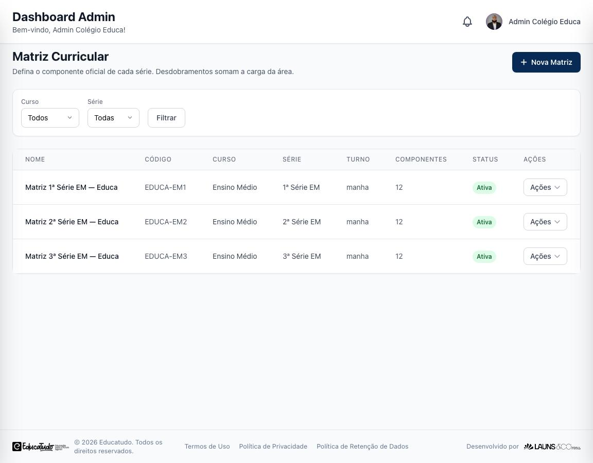
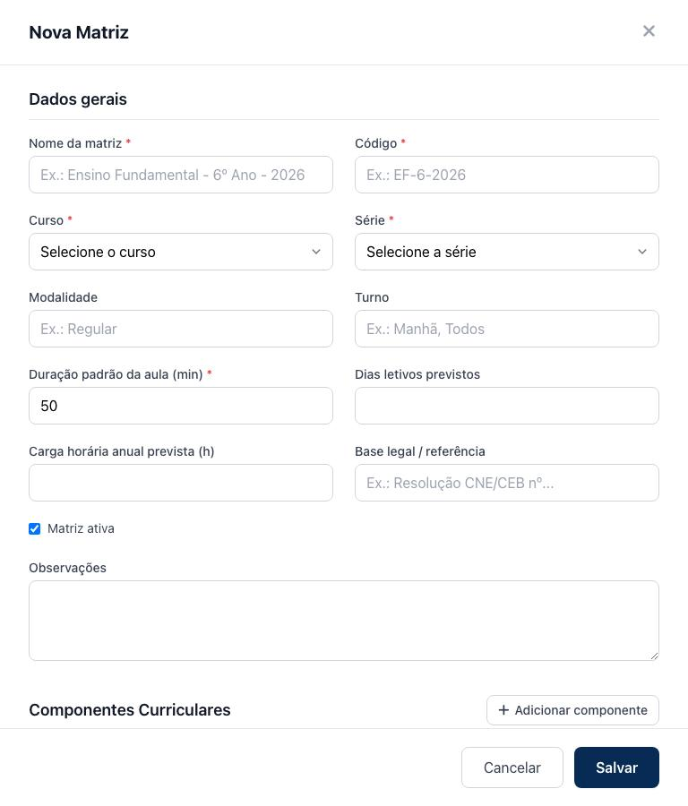
Erros comuns
Componente cadastrado e não incluído aqui. É a causa nº 1 de “a disciplina não aparece no boletim”.
Repetir a mesma carga em séries diferentes sem conferir: a carga pertence ao vínculo série + disciplina, não à disciplina.
Usado depois em: Turmas, grade horária, diário, boletim e histórico.
Calendário Letivocalendário não configuradoComo saber que deu certo: O ano letivo tem calendário cadastrado.Abrir▸
Como fazer
Defina a meta de dias letivos do ano.
Cadastre feriados, recessos e férias — nenhum deles conta como dia letivo.
Cadastre reposições, que somam dias letivos.
Confira a contagem final.
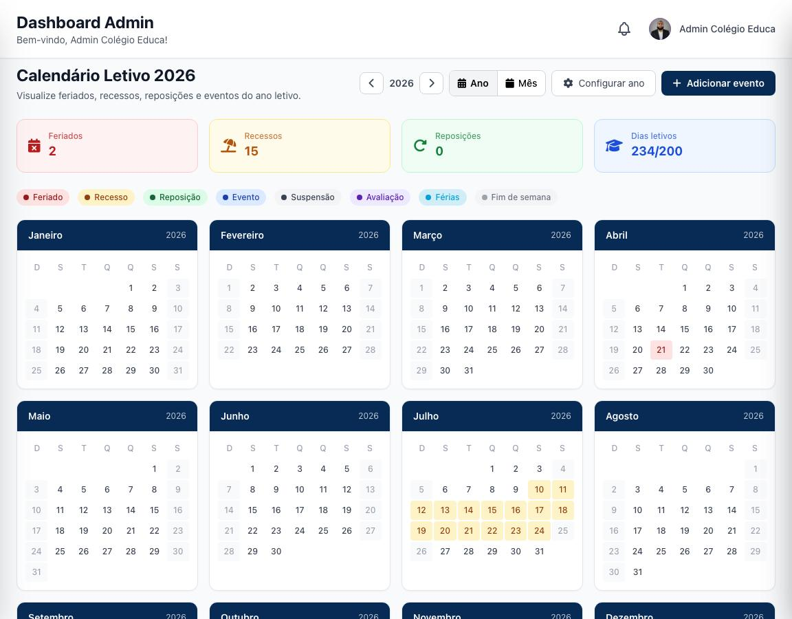
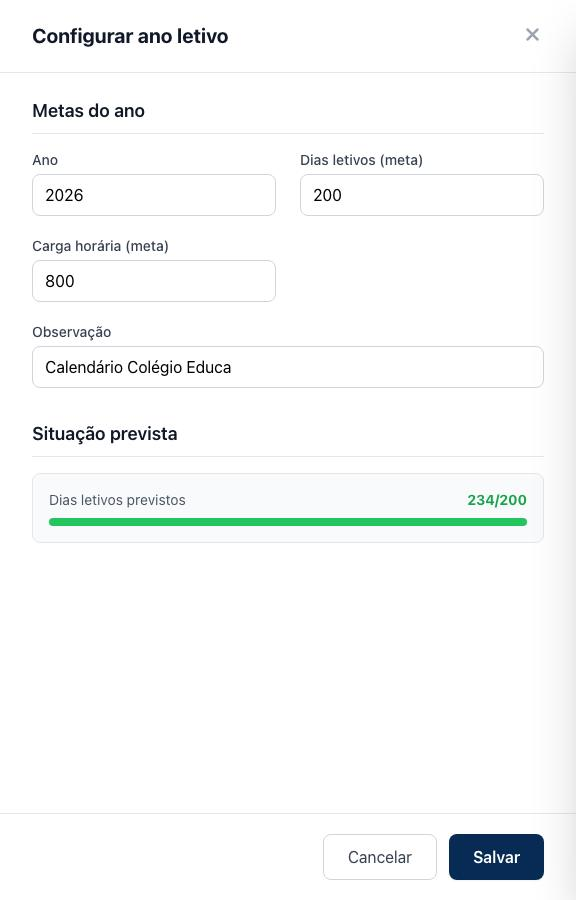
Erros comuns
Esquecer feriados: a contagem fica maior que a real e a frequência sai errada.
Cadastrar evento que não é aula sem marcar “Descontar dos dias letivos”.
Usado depois em: Frequência, diário e fechamento.
No perfil Secretaria este item não aparece no menu lateral. Entre por Acadêmico no painel, ou peça a um administrador para abrir a tela.
Pessoas e turmas
Professoresnenhum professor cadastradoComo saber que deu certo: Há ao menos um professor ativo.Abrir▸
Como fazer
Cadastre nome completo e e-mail institucional — é o acesso dele.
Vincule os componentes que ele leciona (ajuda na organização; a grade ainda lista todo professor ativo).
Confira que está ativo.
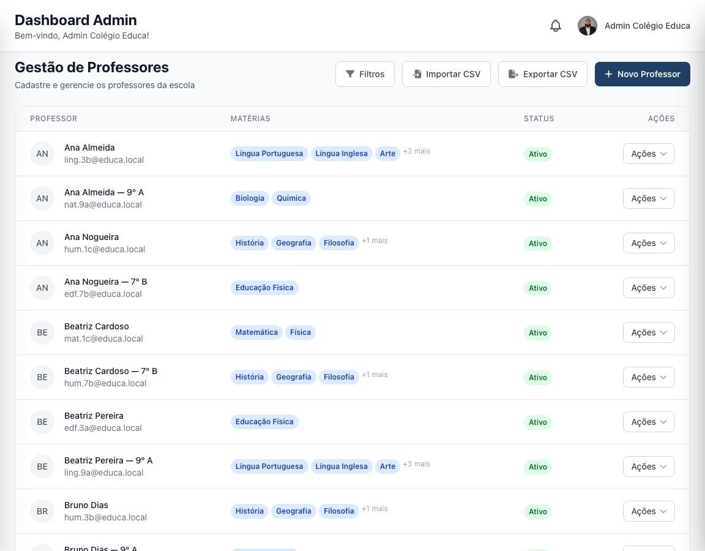
Erros comuns
E-mail digitado errado: ninguém descobre até o dia do treinamento.
Deixar o professor inativo: aí sim ele some da grade.
Usado depois em: Grade horária, diário e lançamento de notas.
Salas / Ambientesnenhuma sala cadastradaComo saber que deu certo: Há salas cadastradas para usar como sala padrão e na grade.Abrir▸
Como fazer
Cadastre as salas com nome, capacidade, bloco e andar.
Cadastre também ambientes especiais: laboratório, quadra, biblioteca.
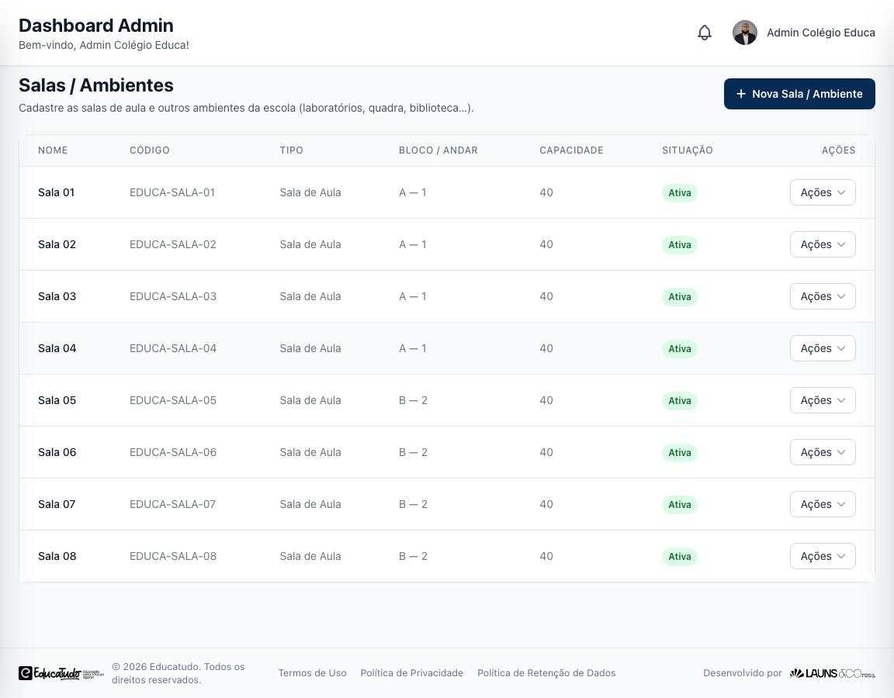
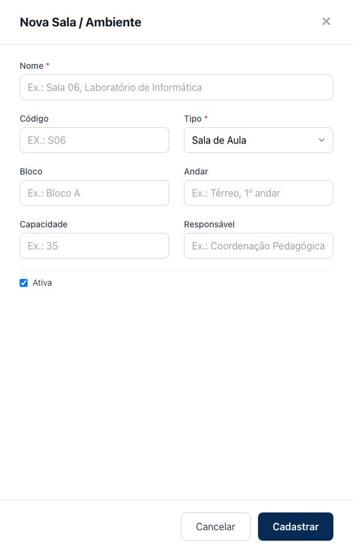
Erros comuns
Nomes duplicados entre salas — depois ninguém sabe qual é qual na grade.
Usado depois em: Sala padrão da turma e montagem da grade horária.
A sala vem antes da turma porque o cadastro da turma pede a sala padrão.
Turmasnenhuma turma criada neste anoComo saber que deu certo: Existem turmas do ano letivo, com curso, série e matriz.Abrir▸
Como fazer
Crie a turma com ano letivo, curso, série e turno.
Aponte a matriz curricular da série — é ela que define as disciplinas da turma.
Defina a sala padrão.
Professores e horários entram no passo da Grade Horária, não nesta tela.
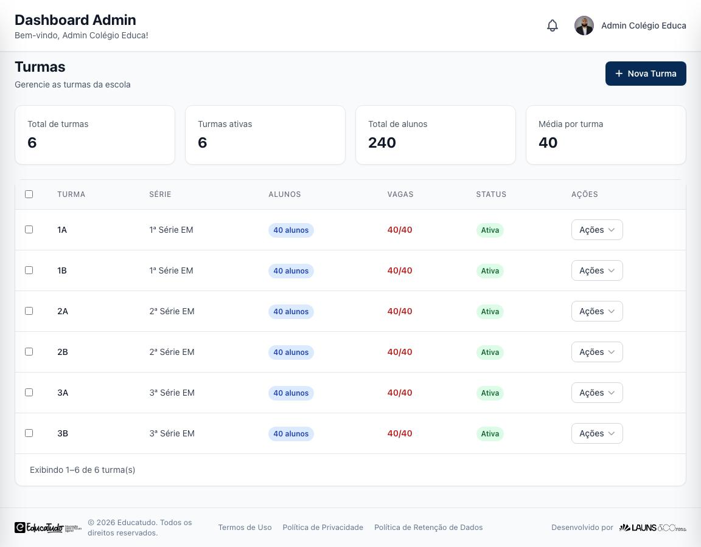
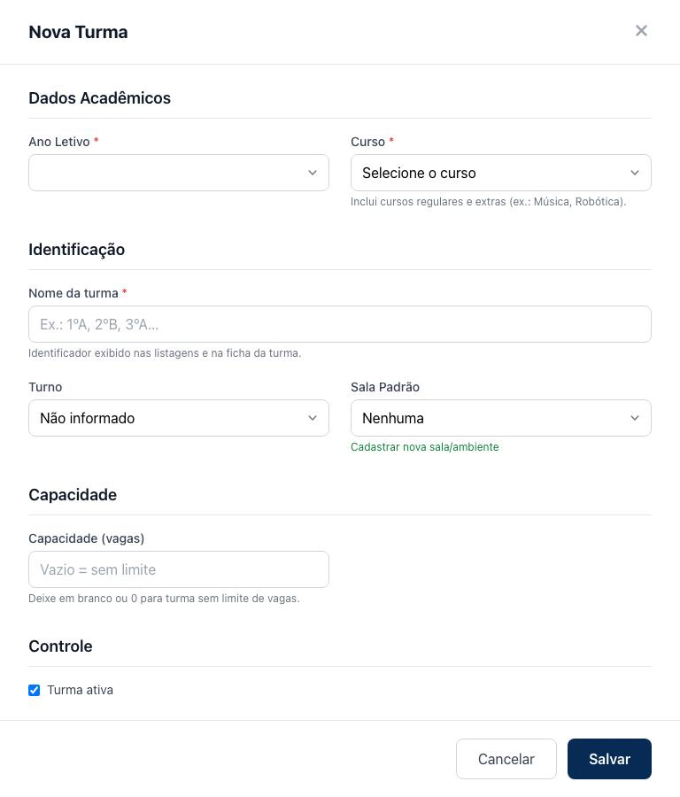
Erros comuns
Criar turma antes da matriz: ela nasce sem o vínculo das disciplinas.
Esquecer o ano letivo: a turma fica fora do ano que a trilha está montando.
Usado depois em: Matrícula, grade horária, diário, notas e fechamento.
A turma vem antes do aluno porque não dá para matricular em turma que não existe.
Alunosnenhum aluno matriculado nas turmasComo saber que deu certo: Há alunos matriculados nas turmas — não apenas cadastrados.Abrir▸
Como fazer
Cadastre o aluno com nome completo, data de nascimento e código. O login dele é nickname e senha, nesta mesma tela.
Na listagem, clique em Detalhes. Abre a ficha: é o lugar de tudo o que é deste aluno (abas no topo, Editar e Mais ações).
Na ficha, vincule o responsável — sem ele não há comunicação nem app da família.
Matricule o aluno na turma em Mais ações → Nova matrícula. Cadastrar e matricular são dois atos.
Para volume, use Cursos e Séries → Ações → Importar alunos.
Se ele veio de outra escola, a matrícula é do tipo Transferência — e a escola anterior se registra na Vida Escolar (seção mais abaixo).
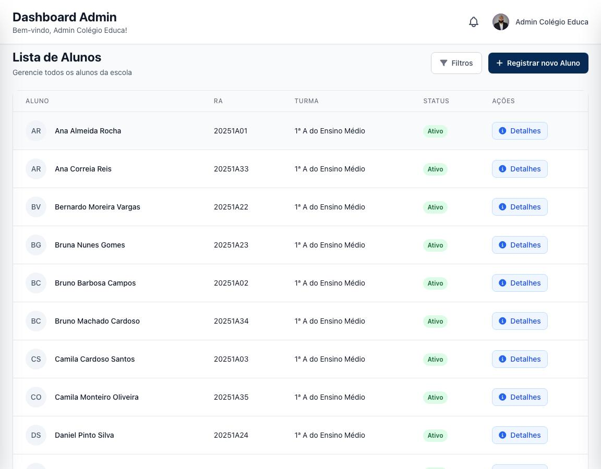
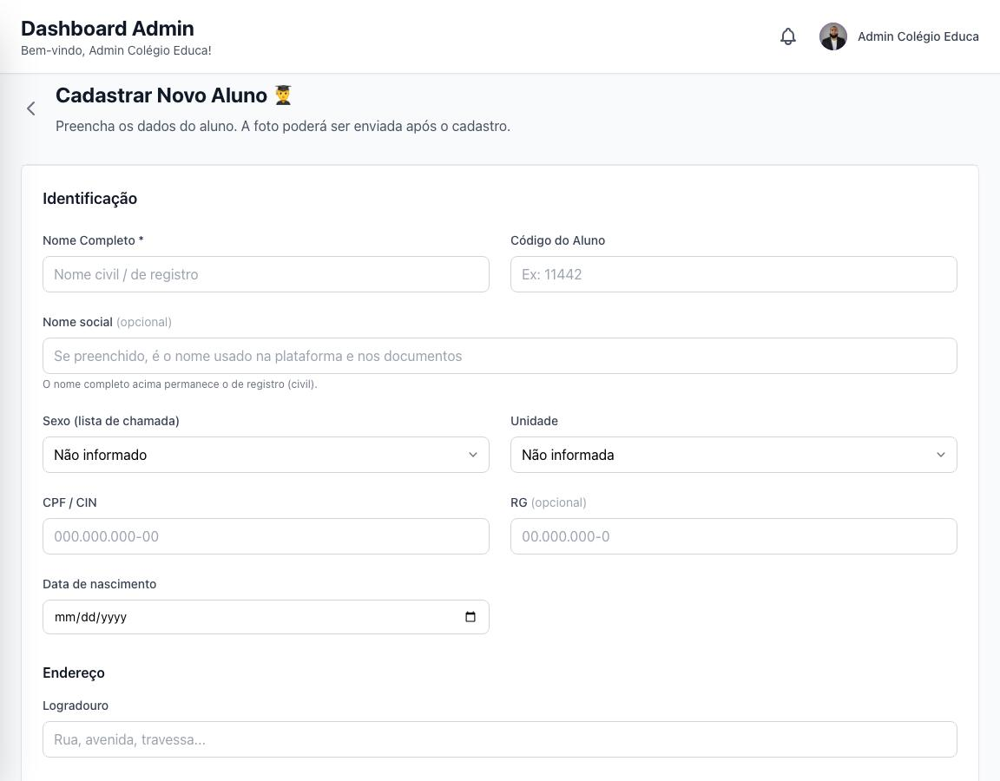
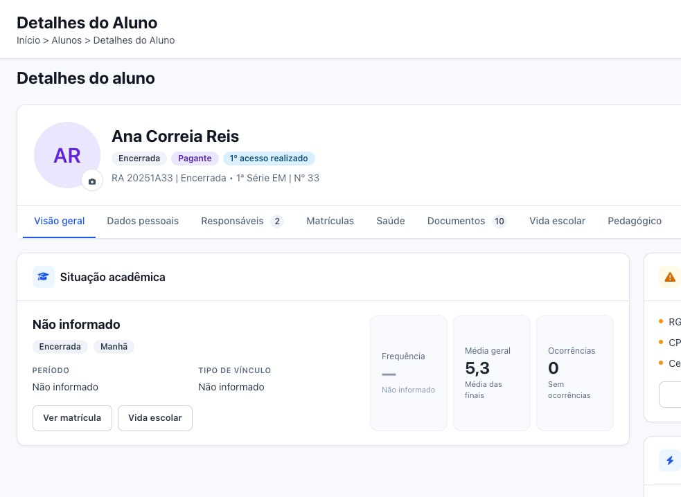
Erros comuns
Cadastrar e não matricular. O aluno existe, mas não aparece em nota, chamada nem boletim.
Importar com a coluna de turma em branco ou com código que não existe.
Aluno que entra depois do início do ano sem a data de matrícula correta.
Achar que cadastrar o aluno já grava a escola anterior. Não grava. Isso é Vida Escolar → Trajetória → Lançar Escola.
Usado depois em: Tudo que é por aluno — nota, chamada, boletim e documentos.
Este passo só fica pronto quando há matrícula ativa no ano, não só cadastro. Como usar cada aba da ficha: seção “A ficha do aluno”. Transferido: veja “Quando o aluno chega de outra escola”.
Grade Horárianenhuma grade montadaComo saber que deu certo: Há ao menos uma aula cadastrada na grade.Abrir▸
Como fazer
Selecione a turma.
Para cada aula: dia da semana, horário de início e fim, componente e professor.
Gere o PDF e confira.
A lista de disciplinas mostra os componentes avaliáveis; a de professores, todos os ativos. Confira à mão se fecha com a matriz.
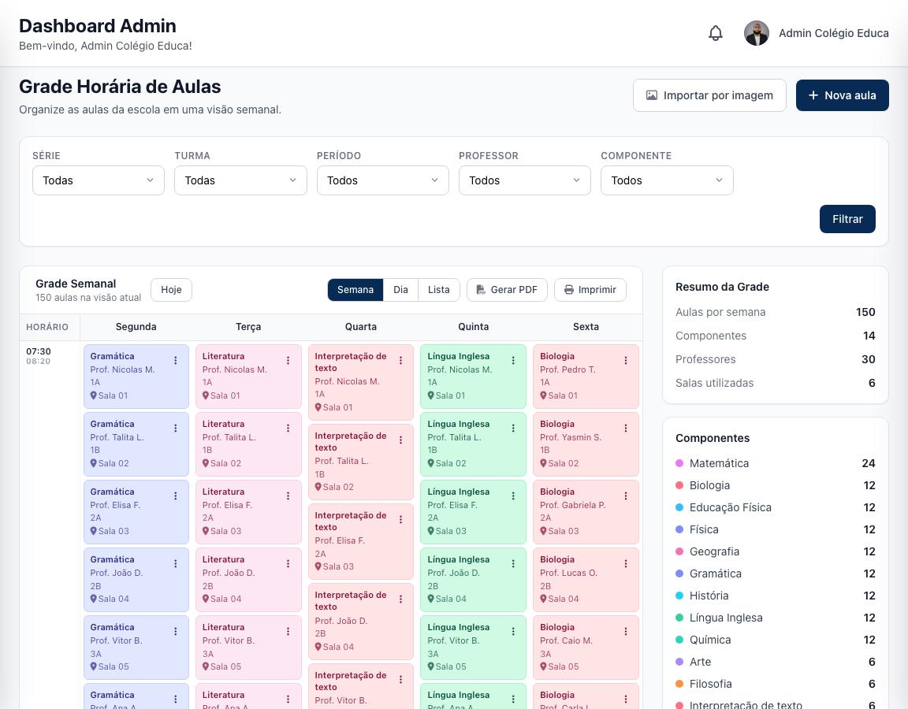
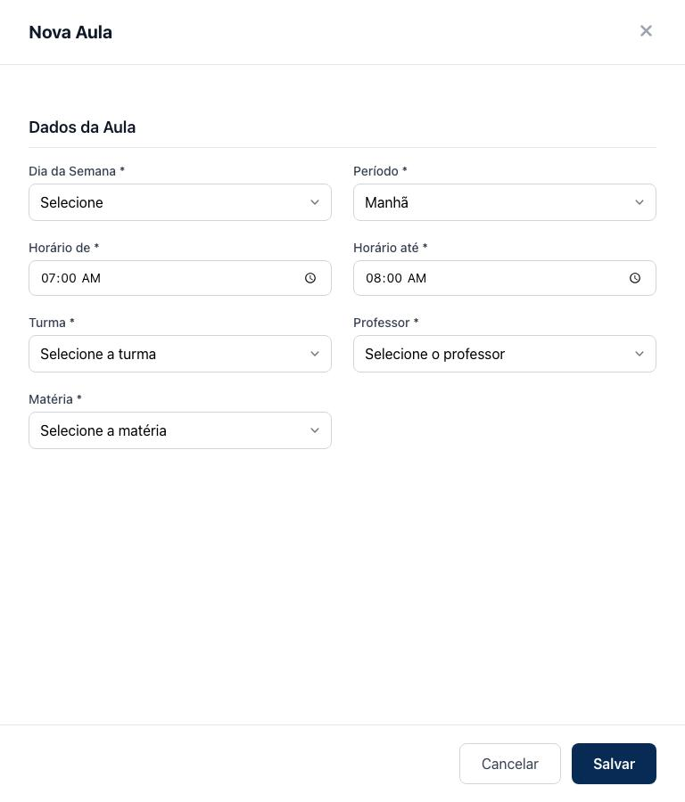
Erros comuns
Mesmo professor em duas turmas no mesmo horário — o sistema ainda não bloqueia isso.
Grade que não fecha com a carga da matriz — confira a soma.
Disciplina da série que não está na matriz: o problema está no passo da Matriz Curricular.
Usado depois em: Diário de classe, frequência e consulta do professor e do aluno.
Como a escola avalia
Regras de Aprovaçãonenhuma regra cadastradaComo saber que deu certo: Há uma regra ativa com média mínima e, se usar, frequência.Abrir▸
Como fazer
Defina a média mínima e a frequência mínima.
Marque se a frequência também reprova.
Configure o tipo de recuperação e como ela entra na média.
Defina arredondamento e casas decimais. Vincule ao ano letivo correto.
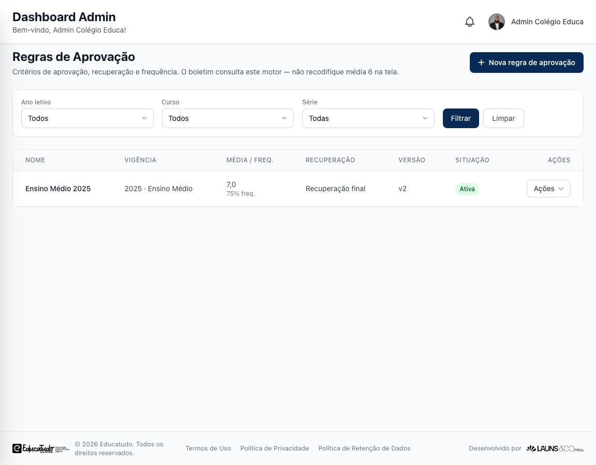
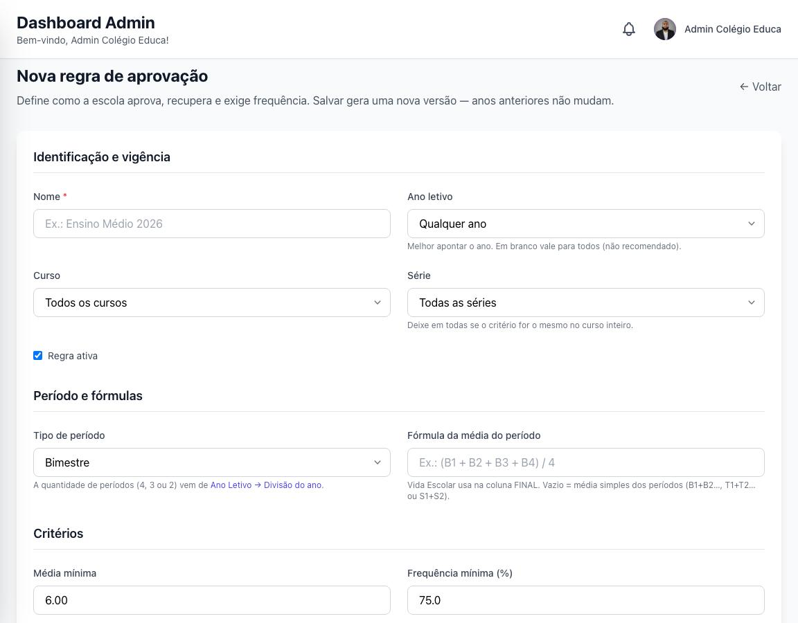
Erros comuns
Assumir que o padrão do sistema é a regra da escola. Confira, não presuma.
Não vincular ao ano letivo correto. As regras são versionadas por ano — mexer em 2026 não altera 2025, e isso é proposital.
Usado depois em: Cálculo da média, resultado final, boletim e fechamento.
É este passo que faz o boletim sair certo. Se algo vier errado depois, o problema quase sempre está aqui — não na tela de notas.
Tipos de Notanenhum tipo de nota cadastradoComo saber que deu certo: Há ao menos um tipo de nota ativo.Abrir▸
Como fazer
Cadastre cada natureza de nota que a escola aplica: prova bimestral, trabalho, simulado.
Escolha se é online (prova na plataforma) ou offline (a escola informa a nota).
Escolha evento único (informa uma vez no período) ou múltiplos (várias vezes, consolidadas depois).
Defina a escala e como fecha a nota final.
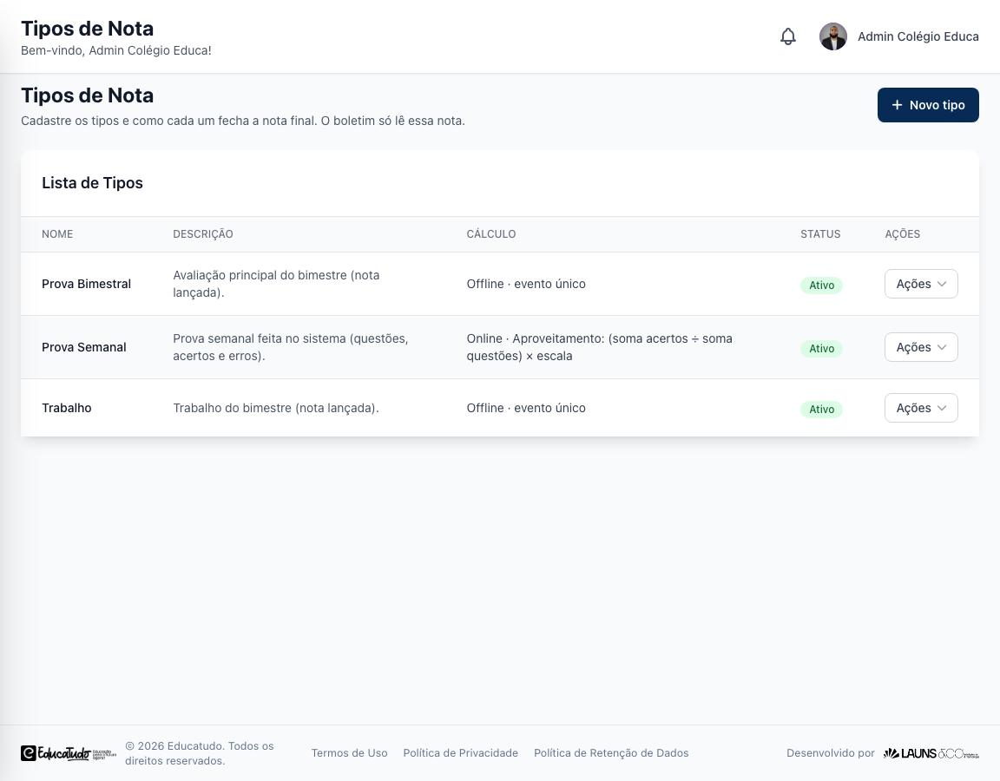
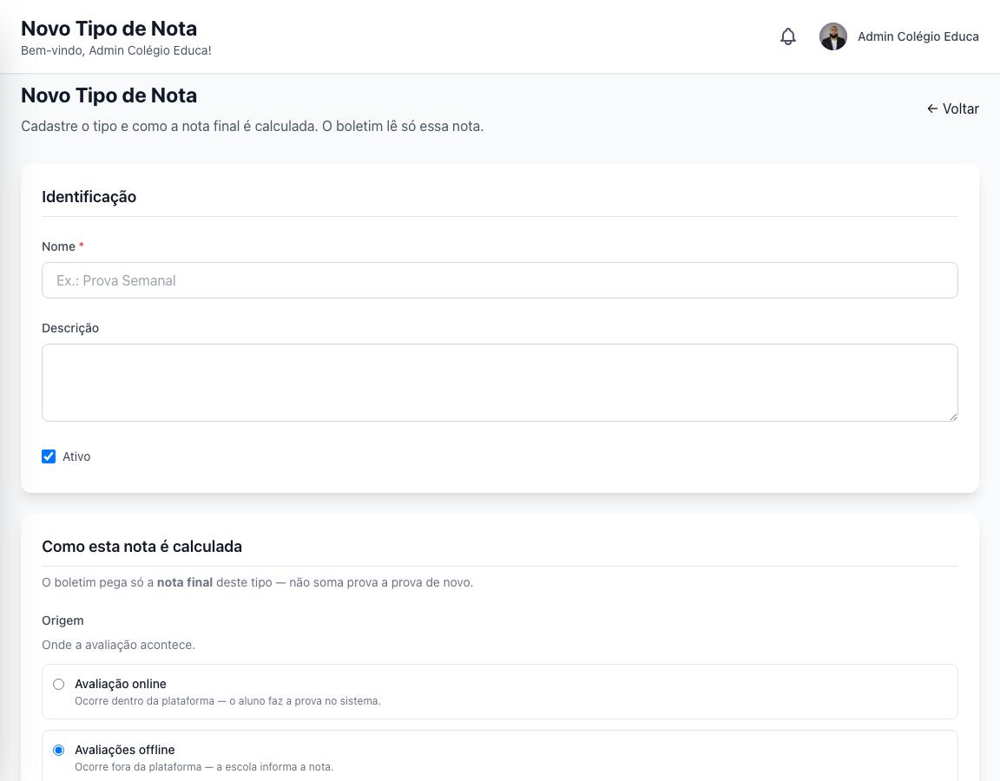
Erros comuns
Escala diferente da que a escola usa: a nota entra fora do padrão do boletim.
Esquecer de definir o que acontece quando dois professores lançam o mesmo componente.
Usado depois em: Quadro de notas, lançamento e boletim.
Quadro de Notasnenhum quadro cadastradoComo saber que deu certo: Existe um quadro de notas com colunas definidas.Abrir▸
Como fazer
Dê um nome ao quadro (ex.: “Provas semanais 2026”).
Crie as colunas — onde cada nota vai cair: S1, S2, AV1.
Se a escola divide as disciplinas em blocos, crie os blocos e vincule as disciplinas.
Na hora de criar o evento em Lançamento de Notas, aponte este quadro e a coluna.
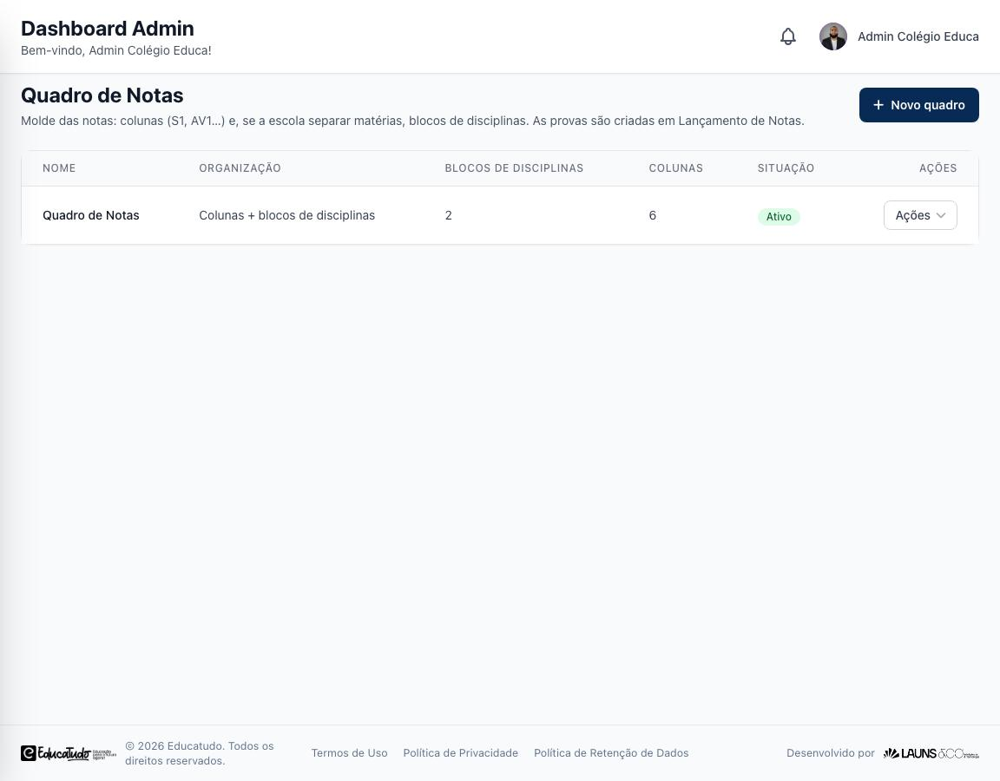
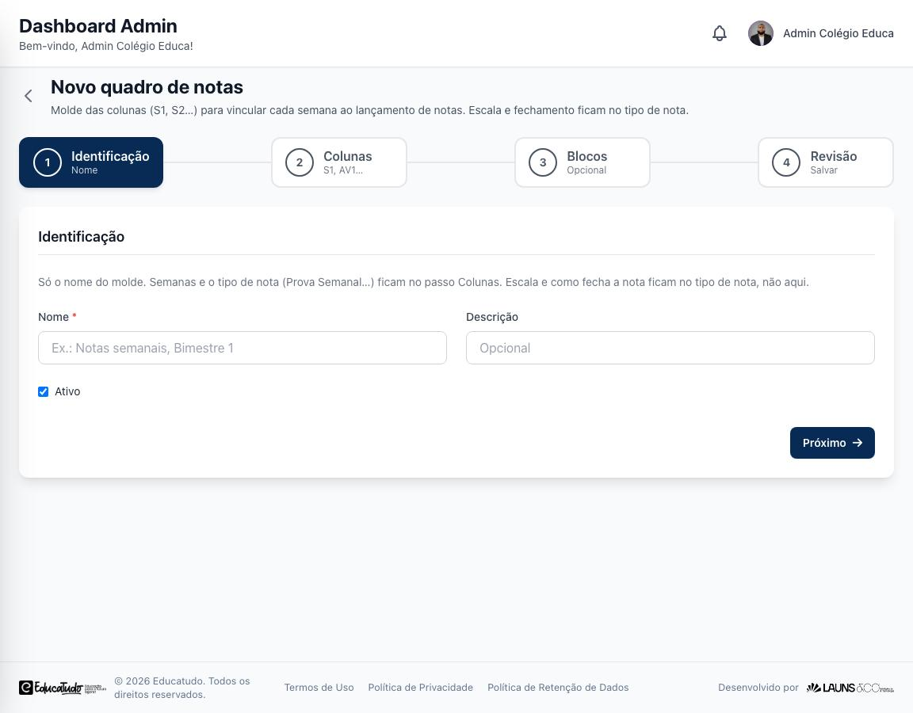
Erros comuns
Criar bloco sem vincular disciplina: o quadro fica montado e não recebe nota.
Montar colunas que não correspondem ao que a escola aplica de verdade.
Usado depois em: Lançamento de notas. As colunas do boletim nascem daqui, pelo evento — não pelo cadastro do modelo.
Se todas as disciplinas usam as mesmas colunas, você não precisa criar bloco nenhum.
Modelo de Boletimnenhum modelo cadastradoComo saber que deu certo: Existe modelo de boletim oficial vinculado a uma regra.Abrir▸
Como fazer
Crie o modelo e escolha se é oficial (vai para o histórico) ou extra (curso complementar, não entra no histórico).
Vincule a regra de aprovação que ele usa — média, frequência e arredondamento saem dela.
Marque as disciplinas (áreas oficiais) e, se quiser, as séries ou turmas.
Defina quem vê: aluno, família.
Use Simular boletim e confira contra a conta feita à mão para um aluno.
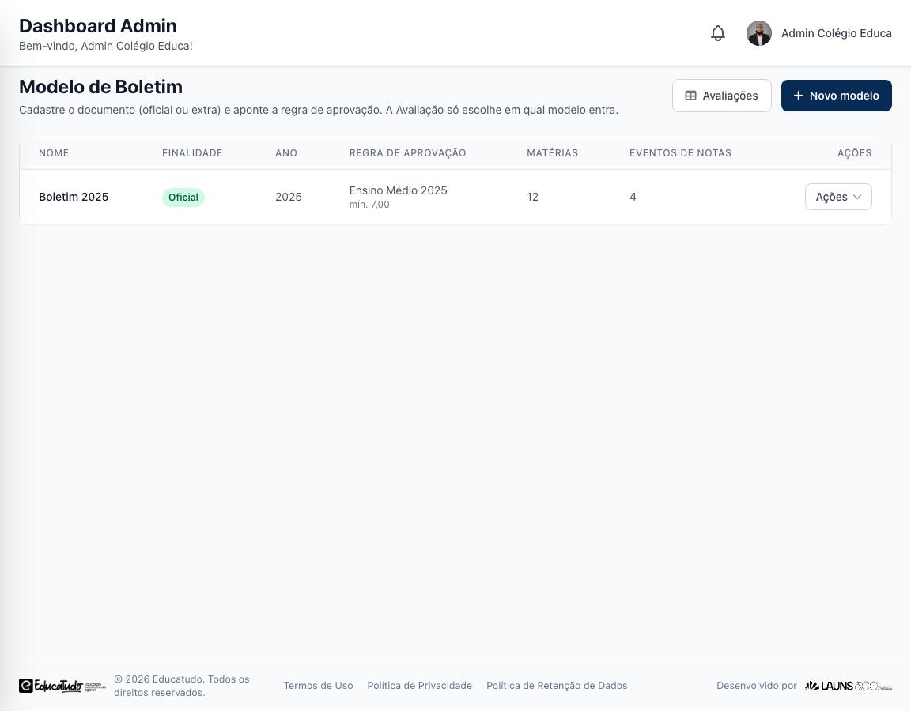
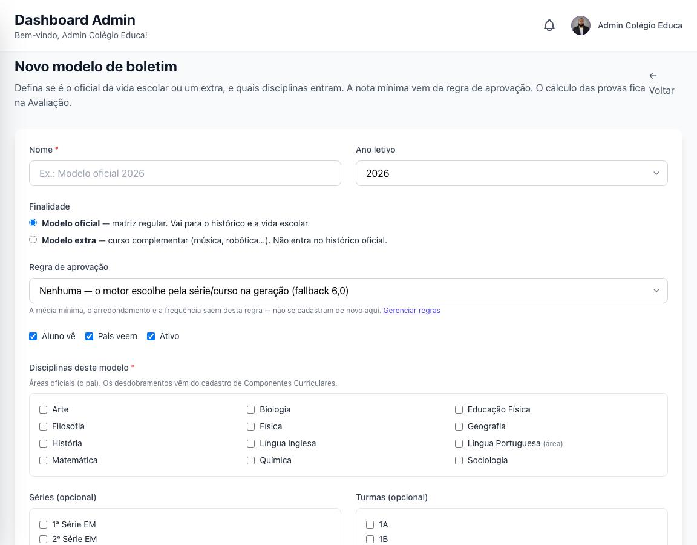
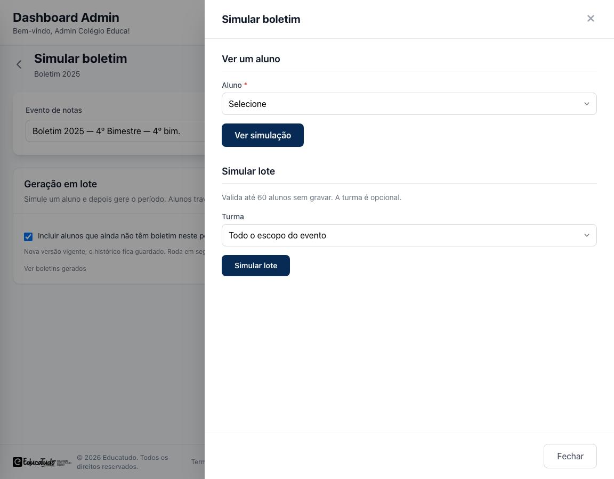
Erros comuns
Publicar sem simular. A simulação existe justamente para ver o resultado antes de valer.
Confundir modelo oficial com extra — o extra não entra no histórico.
Procurar o campo de quadro nesta tela: ele não existe aqui. O quadro entra no evento de Lançamento de Notas.
Usado depois em: Emissão de boletins, fechamento e histórico escolar.
O quadro de notas não se escolhe neste cadastro. Sem o quadro apontado no evento, a nota não chega no boletim.
Depois da implantação, o ano roda
Os 14 passos acima acontecem uma vez. A ficha do aluno é o lugar de tudo o que é dele. Os dois ciclos abaixo se repetem o ano inteiro.
Toda semana
Rotina
Avaliação → nota lançada → diário e frequência.
É o que alimenta todo o resto: sem nota lançada, não há boletim nem ata.
A cada bimestre
Fechamento
Conferir → fechar → conselho → homologar → emitir.
É aqui que sai a ata, o boletim e, no fim do ano, o histórico.
A ficha do aluno
Tudo o que é deste aluno mora aqui. Não se lança nota nesta tela — mas é nela que a secretaria
vê o cadastro, a matrícula, o responsável, o prontuário e o que falta. Abre na listagem, no botão Detalhes.
Como a ficha está organizada
O topo identifica. As abas separam o assunto. Mais ações faz o que muda o aluno.
Listagem → DetalhesAcadêmico → Alunos → o aluno
▾
Topo da fichafoto, RA, status, Editar aluno e Mais ações
▾
AbasVisão geral · Dados · Responsáveis · Matrículas · Saúde · Documentos · Vida escolar · Pedagógico · Histórico
▾
Mais açõesmatricular, senha, declaração, inativar — o que altera o vínculo
Cadastrar não é matricular.
O cadastro cria a pessoa. A matrícula vincula a uma turma e a um ano letivo. Sem matrícula ativa, o aluno
não entra em chamada, prova nem boletim.
1Abrir a ficha/admin/students▸
Como fazer
Em Acadêmico → Alunos, ache o aluno (busca por nome, RA ou turma).
Na linha, clique em Detalhes. Abre Detalhes do aluno.
O topo mostra nome, foto, RA, status da matrícula (Ativa / Encerrada / Pendente), se é pagante e se já fez o 1º acesso.
Editar aluno muda cadastro (nome, documentos, endereço, login). Mais ações abre o painel da direita — matrícula, senha, declarações, inativar.
Erros comuns
Procurar “editar matrícula” no botão Editar aluno. Editar aluno muda a pessoa; a turma muda em Mais ações → Nova matrícula ou na aba Matrículas.
Confundir aluno Ativo na listagem com matrícula Ativa. A listagem pode mostrar Ativo e a ficha, Encerrada — é o status da matrícula daquele ano.
Usado depois em: Todas as abas abaixo e nas ações do painel direito.
2Visão geralaba Visão geral▸
O que tem aqui
É o resumo. Não se cadastra nada nesta aba: ela mostra a situação acadêmica e aponta para o resto da ficha.
Abra a ficha. A primeira aba já é a Visão geral.
Confira turma, série, status da matrícula, período (entrada — em andamento) e tipo de vínculo (Principal, Extra…).
Os cartões de Frequência, Média e Pendências vêm do boletim oficial. Clique para ir à Vida escolar.
Ver matrícula e Vida escolar saltam para essas abas. Ocorrências no cartão à direita abrem Pedagógico.
Erros comuns
Achar que a média daqui é lançamento. É leitura do boletim — a nota entra no evento de avaliação (Rotina).
Ignorar o selo Encerrada: o aluno pode estar ativo no cadastro e sem matrícula no ano corrente.
Usado depois em: Conferência rápida antes de atender a família ou o conselho.
3Dados pessoaisaba Dados pessoais▸
Como usar
Nesta aba você consulta: identificação (nome, RA, CPF/CIN, RG, nascimento), acesso (nickname, e-mail, 1º acesso), vínculo escolar e endereço.
Para alterar, clique em Editar aluno no topo — não há formulário dentro da aba.
Confira o login: o aluno entra com nickname e senha. Se o 1º acesso está pendente, a senha padrão ainda não foi trocada.
Endereço e certidão saem em declaração e histórico. Preencha antes de emitir documento oficial.
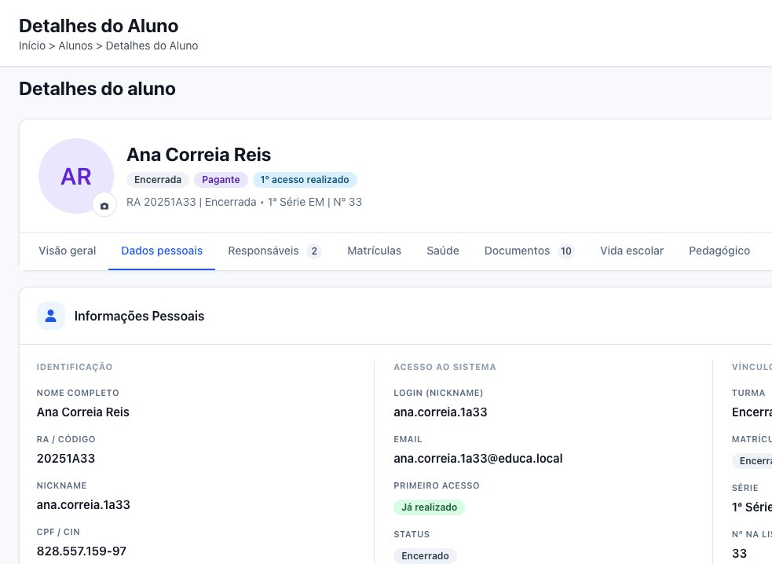
Erros comuns
Corrigir nome só na declaração. O papel lê o cadastro: edite o aluno e emita de novo.
Nickname duplicado ou e-mail errado: o aluno (ou o responsável) não entra no portal.
Usado depois em: Declarações, histórico, portal do aluno e app da família.
4Responsáveisaba Responsáveis▸
Como fazer
A aba lista quem está vinculado: nome, CPF, e-mail, telefone, parentesco e selos (Financeiro, Pode retirar, Ativo).
Para incluir: botão da própria aba ou Mais ações → Cadastrar responsável. Informe nome, documento e o tipo de vínculo.
Marque o responsável financeiro (boletos) e quem pode retirar o aluno na portaria.
Sem responsável, Acessar como responsável fica desabilitado e o app da família não tem conta.
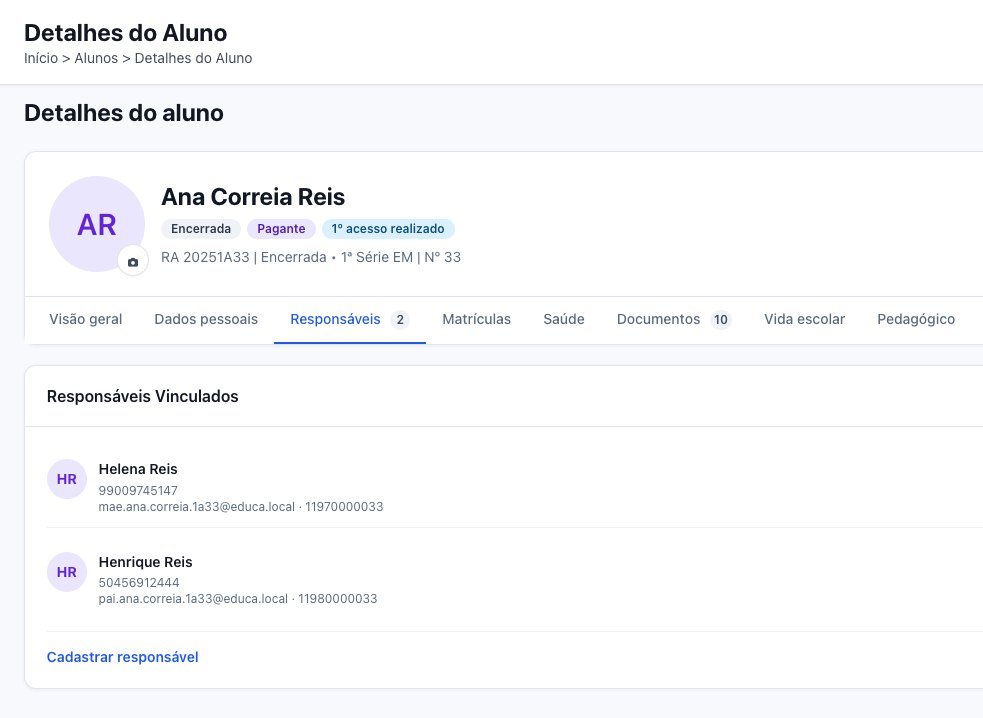
Erros comuns
Deixar o aluno sem responsável. Sem isso não há comunicação oficial nem portal dos pais.
Marcar dois financeiros sem regra da escola — o financeiro usa o responsável marcado.
Cadastrar o responsável e não vincular a este aluno: a pessoa existe, a ficha continua vazia.
Usado depois em: App da família, autorizações de retirada e boletos.
5Matrículasaba Matrículas▸
Como fazer
A tabela mostra cada vínculo: turma, tipo (Principal / Extra / Paralela), ano letivo, entrada, saída e status (Ativa, Encerrada…).
Para matricular neste ano: Mais ações → Nova matrícula. Escolha ano letivo, turma e data de entrada. Transferido: tipo Transferência.
Rematricular inicia o processo do ano seguinte (não substitui a matrícula corrente).
Curso extra (inglês, contra-turno) entra como matrícula Extra — faltas e provas oficiais usam a turma Principal.
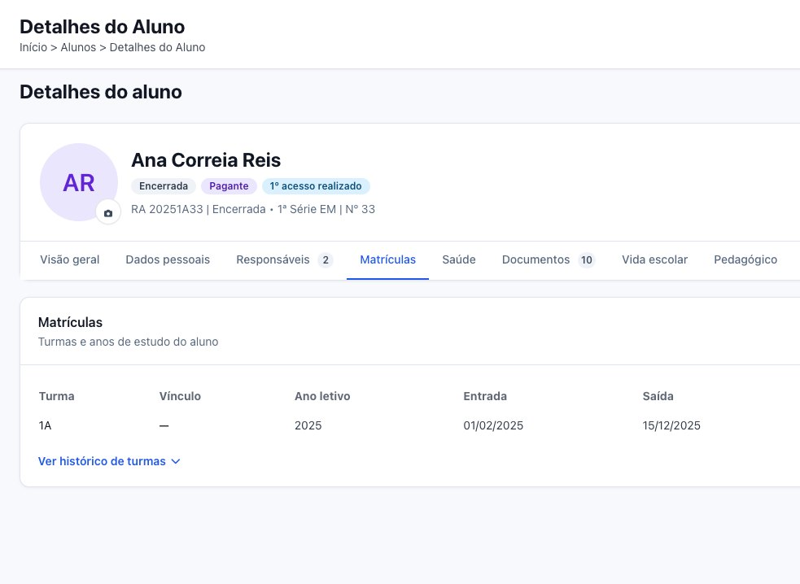
Erros comuns
Cadastrar o aluno e parar. Sem linha Ativa nesta aba, ele não aparece na prova nem na chamada.
Duas matrículas ativas em turmas diferentes do mesmo curso regular: provas e listagens ficam no lugar errado. Use Alinhar matrícula se o sistema avisar.
Data de entrada depois do início do ano sem conferir — a frequência conta a partir desta data.
Usado depois em: Chamada, lançamento de notas, boletim e fechamento.
Esta aba é o vínculo com a turma daqui. Anos cursados em outra escola não entram aqui — entram na Vida escolar → Trajetória → Lançar Escola.
6Saúdeaba Saúde▸
Como usar
A ficha complementar guarda o que a escola precisa no dia a dia: tipo sanguíneo, plano, hospital de referência, alergias, medicamentos, condições crônicas e acessibilidade.
Há também contato de emergência, alimentação e transporte (van, público, próprio, a pé).
Para preencher, use Editar aluno — os campos da ficha complementar ficam no cadastro.
Laudo e máscara de acessibilidade não ficam só aqui: Mais ações → EducaInclui / Laudo.
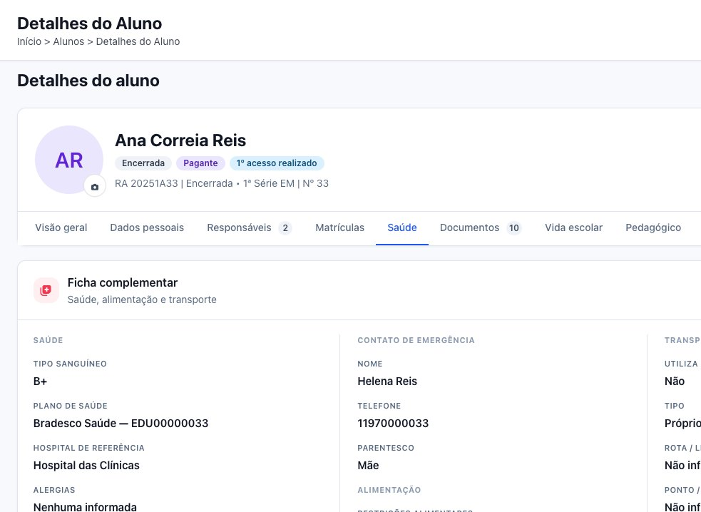
Erros comuns
Alergia só no papel da matrícula e não no sistema. A portaria e o professor leem esta aba.
Confundir Saúde com EducaInclui: saúde é o cuidado cotidiano; o laudo e a máscara de prova estão em EducaInclui.
Usado depois em: Atendimento, passeio, portaria e inclusão.
7Documentosaba Documentos▸
Como fazer
É o checklist de entrega (RG, CPF, certidão, comprovante…). O número na aba é quantos itens a ficha já tem.
Clique em Documento para anexar o arquivo, marcar Entregue ou Dispensado.
Status: Pendente (falta), Entregue (com ou sem arquivo), Dispensado (a escola não exige).
Isto não emite declaração. Declaração, histórico e boletim oficial saem em Mais ações (Gerar declaração / Documentação) ou na Vida escolar.
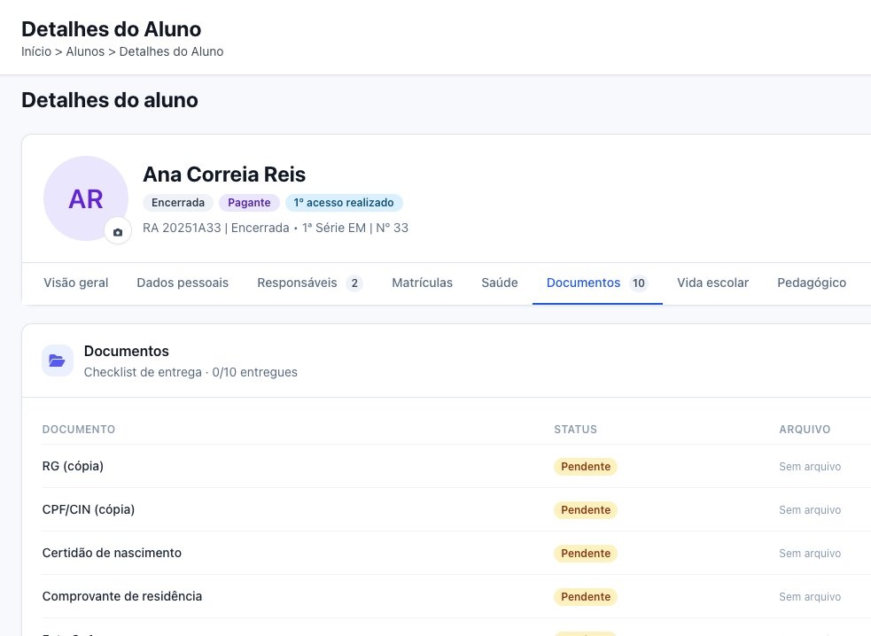
Erros comuns
Marcar Entregue sem guardar o arquivo — na auditoria não há comprovação.
Procurar o PDF do boletim nesta aba. Boletim e histórico estão em Vida escolar e em Mais ações → Documentação.
Usado depois em: Conferência de matrícula e dossiê de transferência.
8Vida escolarprontuário oficialaba Vida escolar▸
O que tem dentro desta aba
É o prontuário. No topo: situação, ficha do ano, documentos e SED/INEP. Embaixo, sub-abas. Daqui saem o boletim deste aluno, o histórico e o registro da escola anterior.
Boletim. Quadro oficial do ano, por disciplina e período. Conferir antes de emitir.
Notas. Notas dos eventos (provas, trabalhos) deste aluno — o detalhe do que alimentou o boletim.
Trajetória. Anos cursados, aqui e em outra escola. Lançar Escola grava a instituição anterior (nome, município, série, resultado). Sem isso o histórico oficial sai só com o que ele fez aqui.
Histórico / emissões. Gerar rascunho, conferir, emitir, assinar e baixar o PDF. Lista o que já foi emitido.
SED / INEP. Códigos e conferência para censo e sistemas da rede.
Dossiê. Pacote de transferência e PDF único da pasta do aluno.
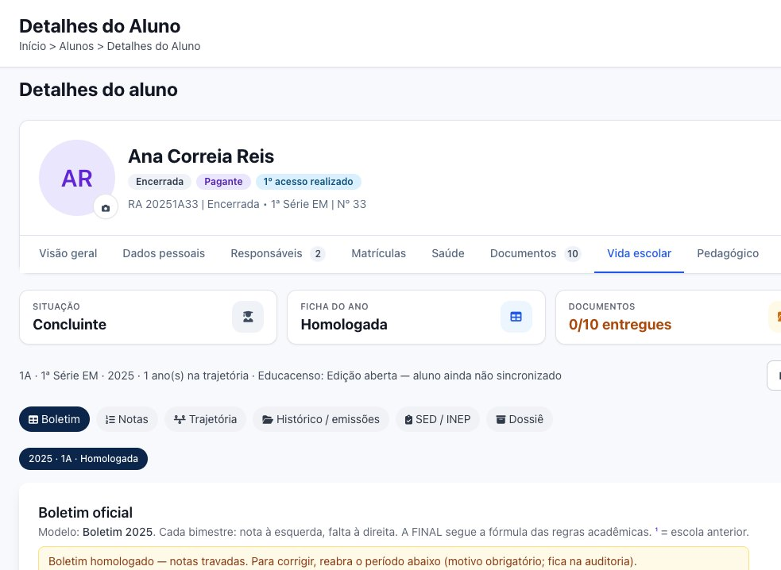
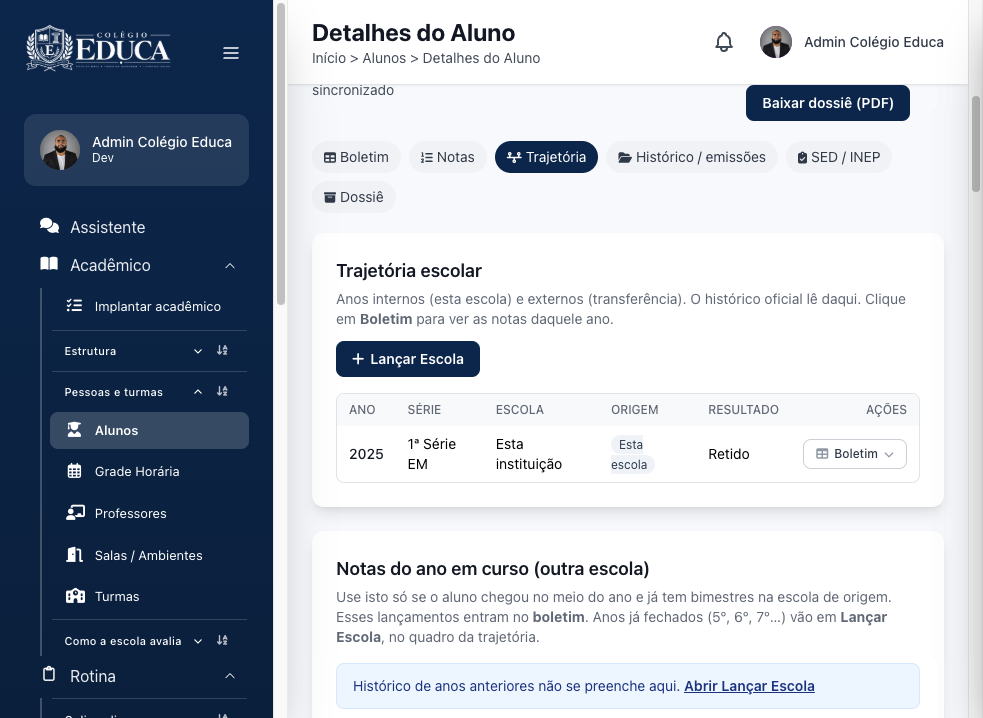
Passo a passo da transferência e do histórico: seções “Quando o aluno chega de outra escola” e Fechamento. O atalho Mais ações → Vida escolar abre esta mesma aba.
Erros comuns
Achar que a matrícula tipo Transferência já preenche o histórico. Não preenche. É Trajetória → Lançar Escola.
Emitir histórico sem conferir a Trajetória: faltam anos ou a escola anterior.
Procurar o ZIP de boletins da turma aqui. ZIP da turma é no fechamento / boletins da coordenação; nesta ficha o recorte é deste aluno.
Usado depois em: Boletim, histórico escolar, transferência e Educacenso.
9Pedagógicoaba Pedagógico▸
Como usar
Acompanhamento do que o aluno fez na plataforma — não substitui o boletim oficial (esse está na Vida escolar).
Desempenho. Indicadores (redação, jornadas, provas). Visão rápida para reunião com a família.
Jornada de Redação. Textos enviados e correção.
Ocorrências. O que foi registrado sobre este aluno. Para criar nova, a tela geral é Secretaria → Ocorrências; aqui você lê o histórico dele.
Jornadas e Provas. Participação e resultados na plataforma (prova online, jornada de estudo).
Acessos. Quando o aluno entrou no portal — útil se a família diz que “não consegue logar”.
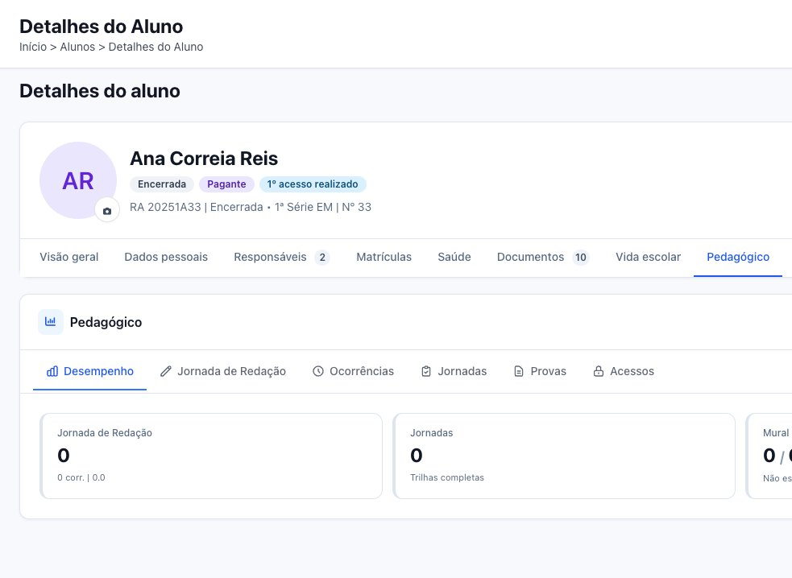
Erros comuns
Usar a nota da prova online daqui como se fosse a coluna do boletim. A coluna oficial nasce do evento apontado ao Quadro de Notas.
Registrar ocorrência só no papel. Sem registro nesta ficha, o conselho não tem histórico.
Usado depois em: Reunião com responsáveis, conselho de classe e suporte de acesso.
10Histórico (auditoria)aba Histórico▸
Como usar
Esta aba não é o histórico escolar. É o log: quem alterou senha, matrícula, cadastro, visualizou a ficha.
Use quando a família questiona uma mudança ou quando precisa saber quem inativou o aluno.
O histórico escolar (quadro de equivalência, PDF assinado) está em Vida escolar → Histórico / emissões.
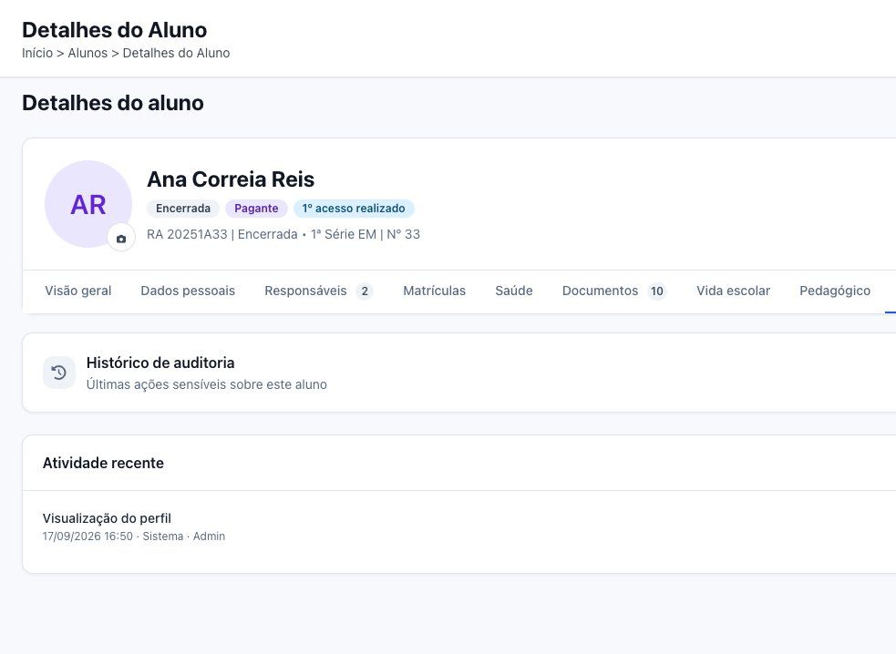
Erros comuns
Abrir esta aba pedindo o documento oficial. Nome parecido, função diferente.
Usado depois em: Auditoria interna e atendimento de dúvida sobre alteração de cadastro.
11Mais açõespainel à direita▸
Como abrir
No topo da ficha, clique em Mais ações. Abre o painel Ações do aluno. Dá para buscar pelo nome da ação.
O que cada grupo faz
Acesso e segurança. Acessar como aluno (abre o portal na conta dele). Acessar como responsável (precisa ter responsável vinculado). Redefinir senha (gera senha padrão de novo).
Matrícula e vínculos. Nova matrícula, Rematricular, Cadastrar responsável, Autorizações de retirada, Financeiro (saldo e faturas).
Documentos e atendimento. Gerar declaração (matrícula, transferência, frequência, comparecimento). Registrar reunião. Documentação (histórico, ficha, boletim oficial). Atalho para Vida escolar. EducaInclui / Laudo.
Outros. Análise da Tudinha (IA). Entrada e saída facial, se a escola usa.
Área crítica. Inativar / Transferir (encerra matrículas e pede o motivo). Excluir aluno (oculta da listagem; os dados não são apagados).
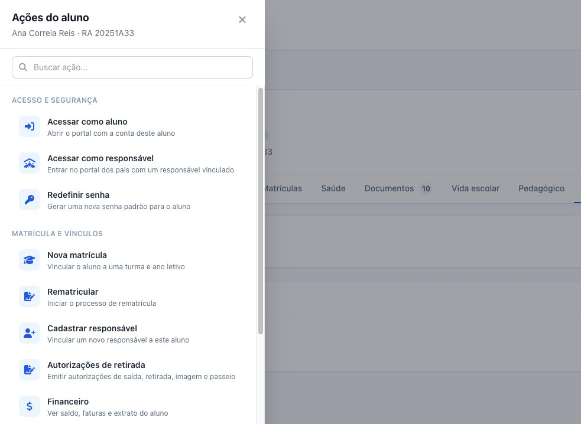
Editar aluno (botão azul) e Mais ações são complementares: um muda o cadastro; o outro executa o que envolve matrícula, documento, acesso e saída.
Erros comuns
Inativar achando que é só “esconder da lista”. Inativar / Transferir encerra as matrículas. Para só corrigir a turma, use Nova matrícula / a aba Matrículas.
Redefinir senha e não avisar a família. A senha padrão volta; o 1º acesso fica pendente de novo.
Excluir para “limpar teste”. A exclusão oculta; não apaga o histórico acadêmico.
Usado depois em: Matrícula, portal, declarações e encerramento de vínculo.
Rotina — lançar notas e registrar a aula
A parte mais usada do sistema, e a que envolve mais gente.
O caminho que a nota percorre
Da prova aplicada até o documento oficial.
Evento de avaliaçãoa coordenação diz o que vai valer nota
▾
Nota lançadao professor ou a secretaria digita
▾
Coluna do Quadro de Notasa nota cai no lugar que o evento apontou
▾
Média do boletima fórmula do Modelo de Boletim consolida
▾
Resultado finalas Regras de Aprovação decidem
▾
Boletim · Ata · Históricodocumentos oficiais
Se a nota não chega no boletim, o problema quase sempre está no terceiro elo.
O evento foi criado sem apontar para a coluna certa do Quadro de Notas. A nota existe, está lançada,
e não aparece em lugar nenhum.
Coordenação
Cria os eventos de avaliação e define para onde a nota vai.
Professor
Monta a prova, quando online, e lança as notas da sua turma.
Secretaria
Lança em nome do professor quando preciso e acompanha o que falta.
1Criar o evento de avaliação/admin/provas▸
Como fazer
Em Avaliações e Notas, clique em Novo Evento. Abre um assistente de 5 passos: Dados → Configuração → Turmas → Professores → Revisão.
No passo 1 · Dados, dê um título que dê para achar depois: tipo + período + turma. Ex.: “Prova Semanal S1 — 1A”.
Escolha o ano letivo, o bimestre e o Tipo de Nota (Prova Semanal, Prova Bimestral, Trabalho…).
Não crie um evento por turma se a avaliação vale para várias: o passo 3 aceita várias turmas de uma vez.
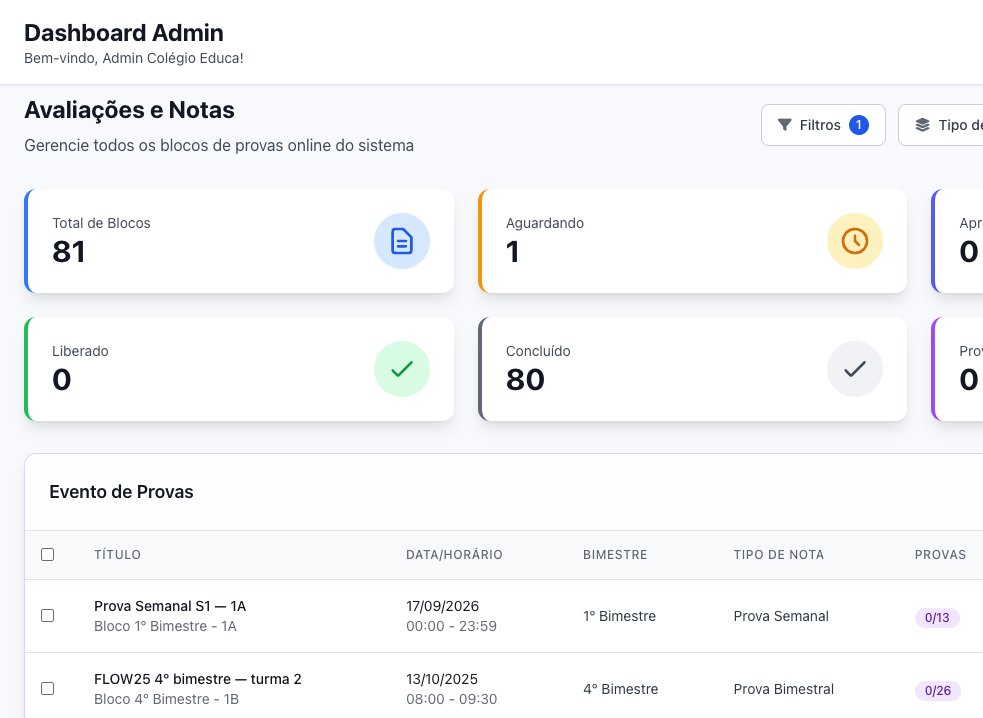
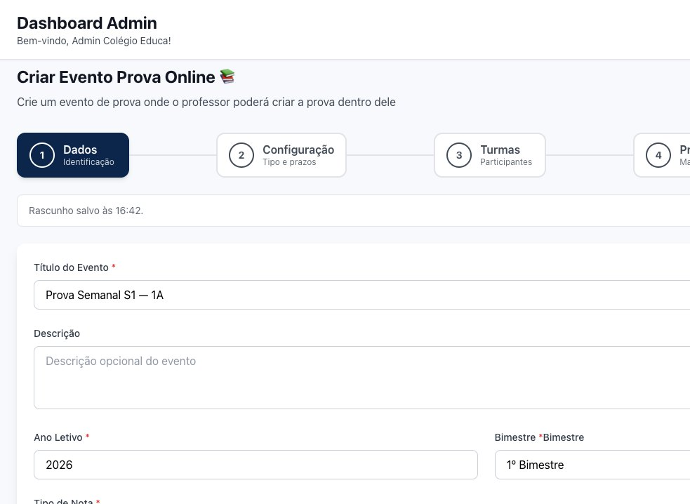
Erros comuns
Título genérico do tipo “Prova”. Com quatro bimestres e várias disciplinas, ninguém distingue depois.
A listagem esconde os eventos Concluídos por padrão. Se “sumiu”, mude o filtro Status para Todos (inclui concluídos).
Usado depois em: Lançamento da nota, quadro de notas e boletim.
2Definir para onde a nota vaionde a nota se perde/admin/provas▸
Como fazer
Ainda no passo 1 · Dados — não é no passo Configuração. Tipo de Nota e destino do quadro ficam juntos aqui.
Em prova semanal, preencha Destinos no quadro: o Quadro, o Bloco de disciplinas (A/B) e a coluna (S1, S2…). O cartão roxo confirma: “Vai para S1 · Bloco A”.
Em prova bimestral, esse bloco some: o próprio Tipo de Nota já aponta a coluna do boletim.
Original ou Substitutiva e “mostrar no portal” vêm no passo 2. Desmarque o portal para prova interna.
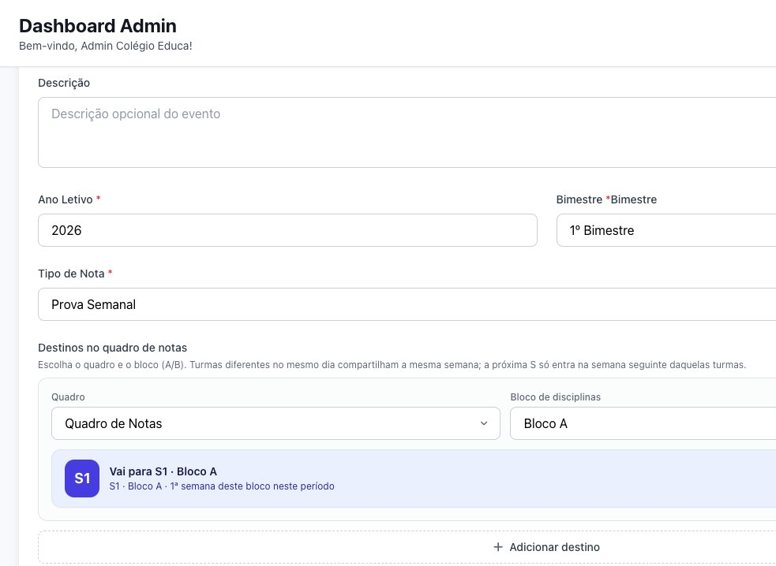
Erros comuns
Deixar o Quadro em branco ou apontando para a coluna errada. A nota é lançada normalmente e não aparece no boletim. É a causa mais frequente de “lancei a nota e sumiu”.
Escolher Tipo de Nota com escala diferente da que a prova usa — a nota entra fora do padrão.
Marcar “mostrar no portal” numa avaliação interna que a escola não queria divulgar.
Usado depois em: Composição do boletim e cálculo da média.
Este é o passo que decide se a nota vira documento. Se só der para conferir uma coisa antes de salvar o evento, confira o destino no quadro.
3Escolher como a prova acontece/admin/provas▸
Como fazer
No passo 2 · Configuração, Tipo de Evento: Prova online (questões na plataforma) ou Lançamento de notas (prova no papel; a escola só informa o resultado, sem questões).
Em lançamento, diga quem lança: Atribuir ao professor ou Coordenação lança a nota. É esta escolha que abre a tela de lançamento no detalhe.
Passo 3 · Turmas: marque quem entra (ex.: 1A). Passo 4 · Professores: professor + matéria + as turmas dele.
Passo 5 · Revisão: confira título, destino no quadro, tipo de evento e responsável — só então Criar Evento.
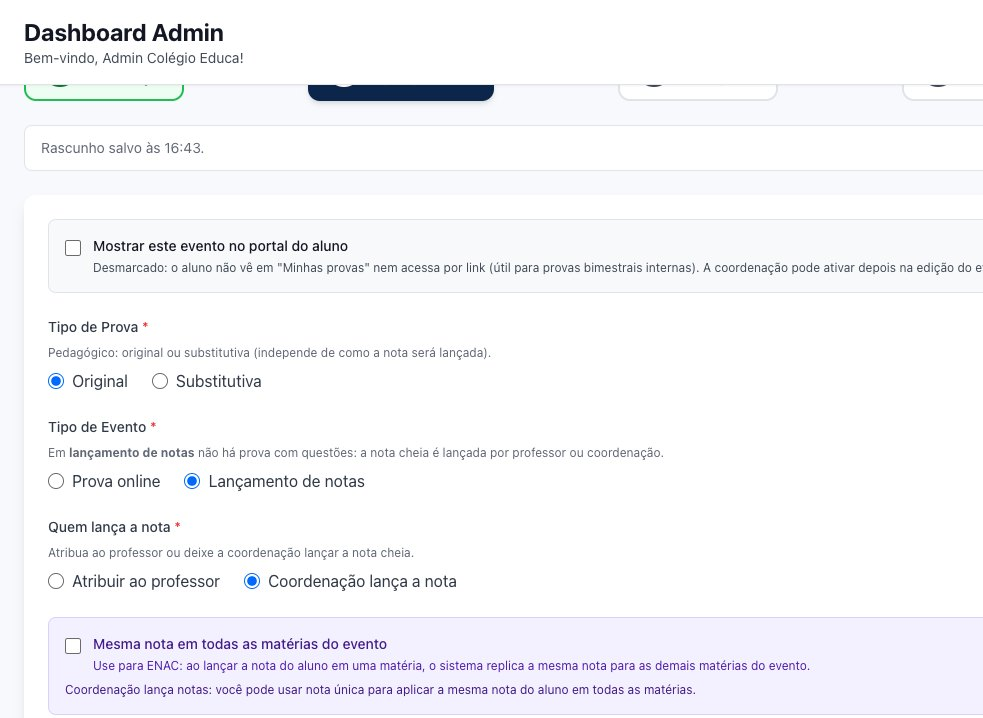
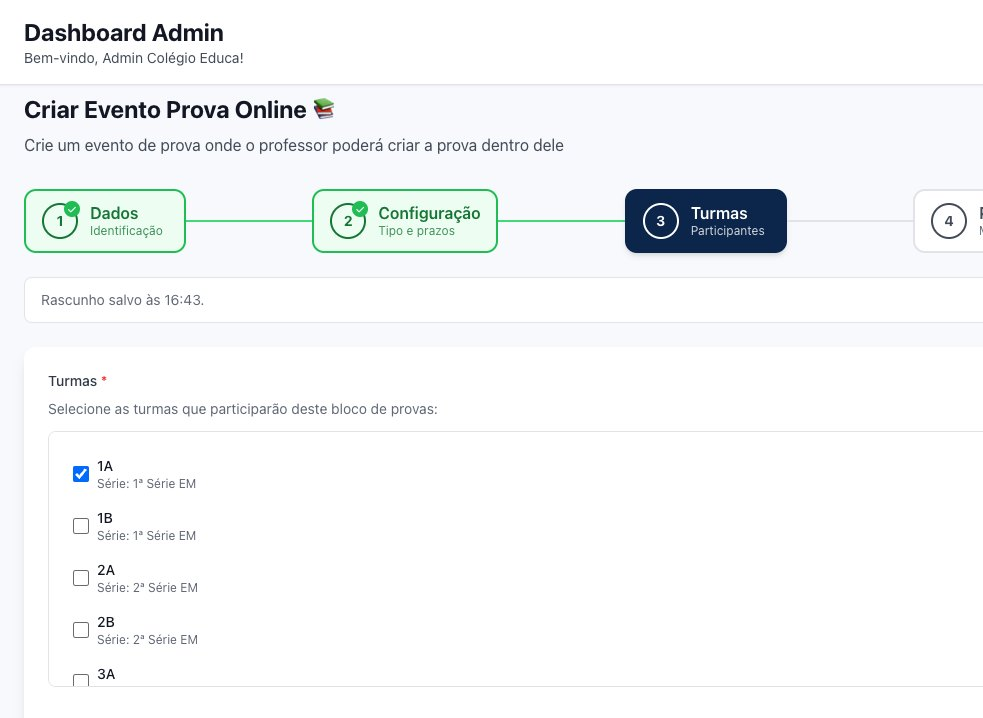
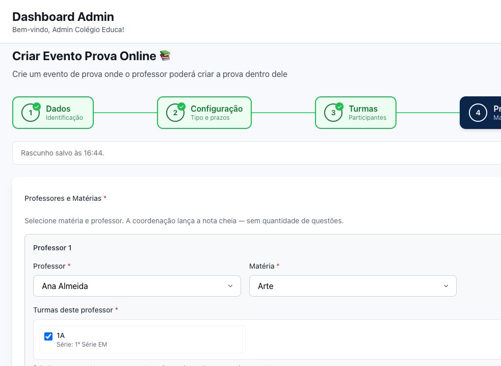
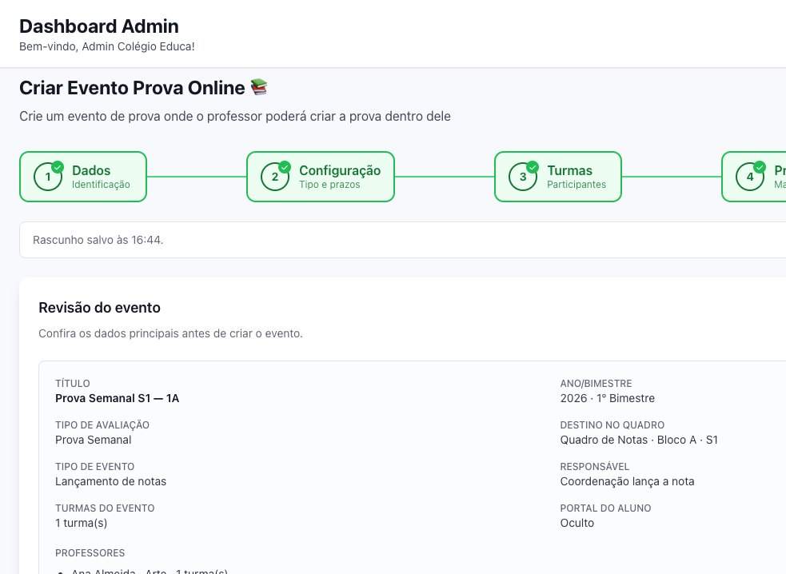
Erros comuns
Escolher “prova online” para uma avaliação que será no papel: o sistema fica esperando questões que nunca chegam.
Atribuir ao professor sem avisá-lo. O evento existe, o prazo corre, e ninguém lança.
Usado depois em: Trabalho do professor e lançamento da nota.
4Lançar as notas/admin/provas▸
O evento inteiro, do começo ao fim
Não se lança nota na listagem. Primeiro o assistente cria o evento; depois se entra no detalhe e se digita a nota aluno a aluno. Exemplo real: Prova Semanal S1 — 1A, lançamento pela coordenação, destino S1 · Bloco A.
Passo 1 · Dados. Título, ano, bimestre, Tipo de Nota. Em semanal: Quadro + Bloco + coluna (S1).
Passo 2 · Configuração. Tipo de Evento = Lançamento de notas. Quem lança = Coordenação lança a nota (ou o professor, se for o caso).
Passo 3 · Turmas. Marque a turma (1A).
Passo 4 · Professores. Professor + matéria daquela turma. Sem quantidade de questões — a nota é cheia, de 0 a 10.
Passo 5 · Revisão. Confira destino no quadro e responsável. Clique em Criar Evento.
Como lançar a nota dentro do detalhe
Na listagem, no evento, abra Ações → Gerenciar. Entra no painel do evento, não na edição do cadastro.
O título vira “Lançamento de notas: …”. Clique em Lançar notas (coordenação) no topo — ou, na linha da matéria, em Lançar/editar notas.
Abre a tabela da turma. Filtre Matéria e Turma no topo. Cada linha é um aluno: campo Nota (0 a 10) e Observação opcional.
Digite as notas. Em branco = sem nota ainda. Confira contra a lista de presença.
Clique em Salvar notas. Sair sem salvar perde o que foi digitado.
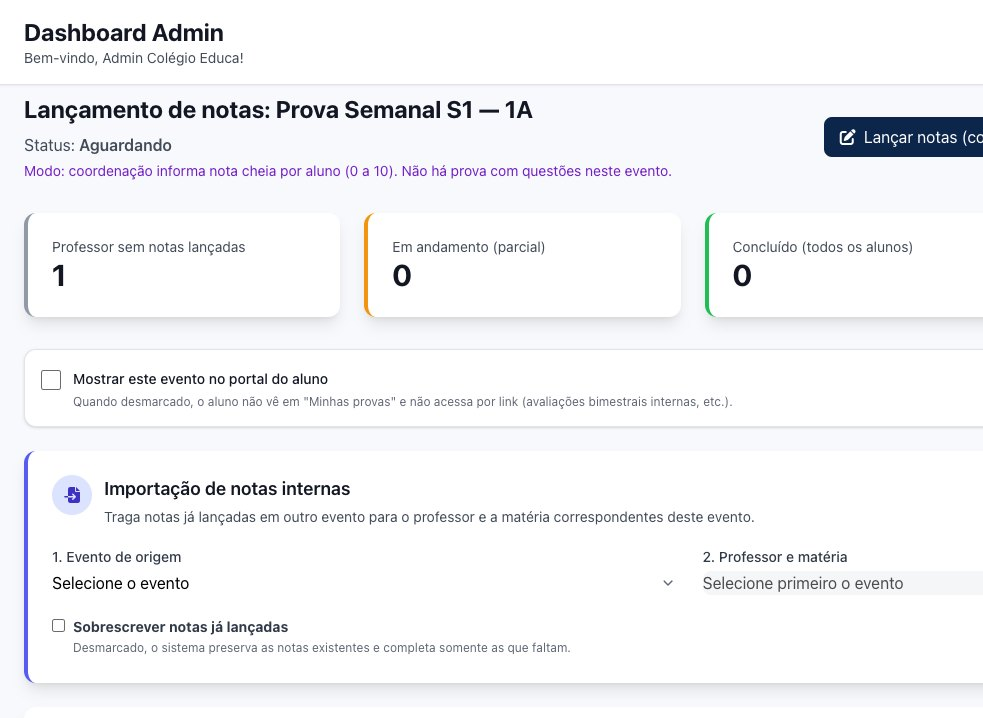
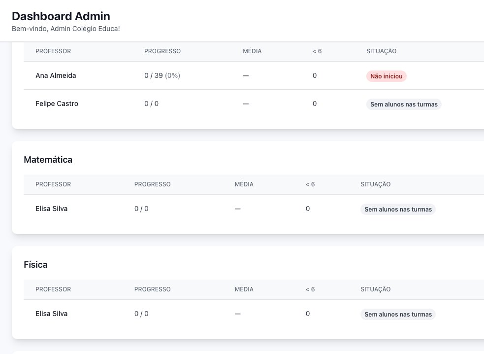
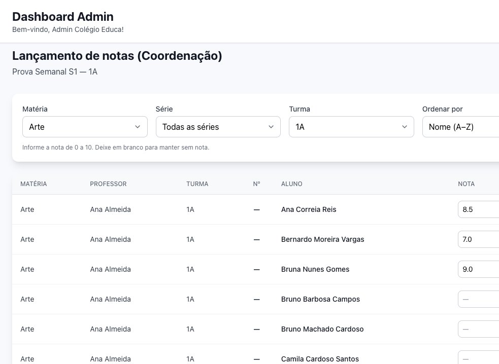
Se no wizard ficou “Atribuir ao professor”, quem lança é o professor em /professor — a coordenação acompanha o progresso no mesmo detalhe. “Coordenação lança a nota” abre a tabela acima para a secretaria/coordenação.
Erros comuns
Procurar a tabela de notas na listagem ou no wizard. Ela só existe depois de Gerenciar → Lançar notas.
Lançar no bimestre ou na coluna errada. Isso se decide no wizard (passos 1 e 2), não na tabela. Conferir o filtro do topo antes de digitar.
Aluno que não aparece: ele não está matriculado naquela turma. Cadastrado não é o mesmo que matriculado.
Sair da tabela sem Salvar notas.
Usado depois em: Simulação do boletim, painel de fechamento e resultado final.
5Segunda chamada e correções/admin/provas▸
Como fazer
Crie outro evento no mesmo assistente, no passo Configuração marcado como Substitutiva, apontando para a mesma coluna do quadro (mesmo S, mesmo bloco).
Entre no detalhe (Ações → Gerenciar → Lançar notas) e lance só os alunos da segunda chamada.
Para corrigir uma nota já lançada, abra de novo a mesma tabela e altere — enquanto o período não estiver fechado.
Erros comuns
Criar a substitutiva apontando para outra coluna: a nota entra, mas em lugar errado do boletim.
Tentar corrigir depois do período homologado. Aí é preciso retificar, e isso fica registrado.
Usado depois em: Resultado final e boletim.
6Acompanhar o diário dos professores/admin/diario▸
Como fazer
Filtre por período, turma e professor.
Veja o que cada professor lançou: conteúdo da aula, frequência e notas.
Use o status para achar quem ainda está pendente.
Cobre os pendentes antes do fim do período. Se precisar, a secretaria também consegue lançar em /admin/diario/lancar.
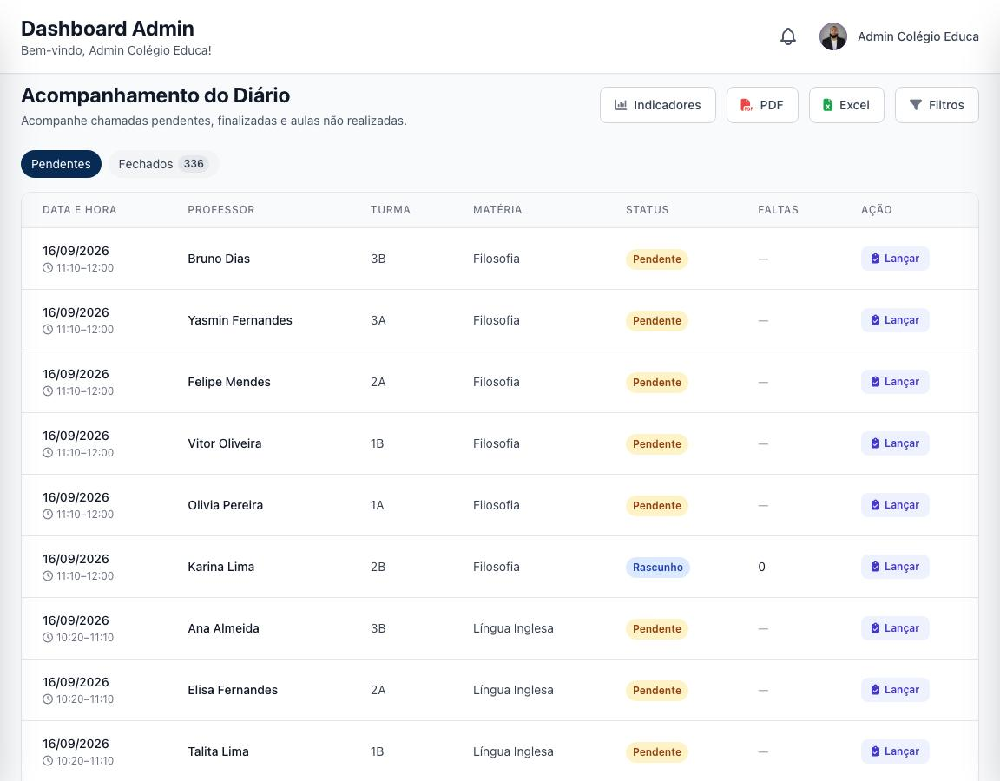
Erros comuns
Descobrir a pendência só na hora de fechar o bimestre. Esta tela existe para ver antes.
Confundir com o diário do professor: o professor lança no portal dele; aqui você acompanha (e, se preciso, lança).
Usado depois em: Frequência, painel de fechamento e conselho de classe.
O professor registra a aula no portal dele. A secretaria acompanha — e pode lançar se faltar.
7Frequência/admin/frequencia▸
Como fazer
Escolha a turma e o período.
Confira o percentual de cada aluno — a mesma tela mostra faltas e presença.
Justifique as faltas que tiverem atestado ou amparo (no diário/presença).
Acompanhe quem está perto do limite mínimo.
Erros comuns
Esperar o fim do bimestre para olhar. Aluno perto do limite precisa ser identificado enquanto ainda dá para agir.
Esquecer que a frequência pode nascer do diário ou de um lançamento avulso de faltas — se o número não bate, confira as duas origens.
Usado depois em: Resultado final, reprovação por falta e conselho de classe.
8Ocorrências/admin/ocorrencias▸
Como fazer
Registre a ocorrência com data, local e o relato do que aconteceu.
Classifique a categoria e a gravidade.
Registre testemunhas, quando houver.
Preencha o que a escola vai fazer — a providência tomada.
Erros comuns
Registrar o julgamento em vez do fato. O relato deve descrever o que foi observado.
Deixar a providência em branco: sem ela, a ocorrência não sustenta medida disciplinar depois.
Usado depois em: Conselho de classe, comunicação com a família e histórico disciplinar.
Quando o aluno chega de outra escola
Sim, o sistema registra a escola anterior. Cadastrar e matricular só coloca o aluno
na turma daqui. Os anos e as notas de fora entram na Vida Escolar da ficha (aba Vida escolar → Trajetória).
Sem isso, o papel sai só com o que ele cursar nesta instituição. Como abrir cada aba da ficha: seção “A ficha do aluno”.
Dois atos diferentes
Matricular como transferido não preenche sozinho o quadro de equivalência.
1 · Entrar na escolaCadastro + matrícula tipo Transferência (vindo de outra instituição).
↓
2 · Registrar a escola anteriorVida Escolar → Trajetória → Lançar Escola (anos fechados) e, se chegou no meio do ano, os bimestres no boletim.
↓
3 · O histórico oficial puxa daquiGerar rascunho junta estes anos externos com os homologados nesta escola.
Não confundir com a saída. Secretaria → Movimentação → Saída da escola (TR) é quando o aluno deixa o colégio. Aqui é o contrário: ele está chegando.
1Matricular como transferênciaAlunos ou Matrículas · tipo Transferência▸
Como fazer
Cadastre o aluno (nome, nascimento, documentos) se ele ainda não existe.
Na matrícula, escolha o tipo Transferência — “Vindo de outra instituição”. Também em Secretaria → Matrículas (/admin/matricula).
Informe ano letivo, turma e a data de entrada. Quem chegou depois do início do ano precisa dessa data certa, senão a frequência e o boletim distorcem.
Vincule o responsável. Sem ele não há app da família nem comunicação da secretaria.
Erros comuns
Usar Matrícula nova para quem já cursou outra escola. O tipo Transferência marca a origem; o cadastro das notas de fora é o passo seguinte.
Parar aqui. O aluno já aparece na turma, mas o histórico ainda não tem o 1º, o 2º, o 5º…
Usado depois em: Vida Escolar, boletim desta escola e histórico oficial.
2Anexar o papel da outra escolaFicha do aluno → Vida Escolar → Histórico / emissões▸
Como fazer
Abra a ficha: Secretaria → Vida Escolar, ou Acadêmico → Alunos → o aluno → aba Vida Escolar.
Vá em Histórico / emissões. No bloco Recebidos de outra escola, escolha o tipo (Histórico escolar, Ficha individual ou Declaração de transferência).
Informe a escola emissora, anexe o PDF ou a imagem e clique em Anexar. Sem arquivo anexado, o botão de IA ainda não existe.
Onde está Ler com IA: depois do Anexar, o arquivo aparece numa linha acima do formulário. Nessa linha, à direita, ficam Abrir e o link roxo Ler com IA. Não fica ao lado do botão Anexar.
O rascunho vai para a aba Trajetória. Só entra na trajetória oficial depois de Validar leitura.
Neste print o bloco está vazio: só o formulário (Tipo, Escola, Arquivo, Anexar). O texto “Depois use Ler com IA” é instrução. O botão só nasce na linha do PDF já anexado. Tipo tem que ser Histórico, Ficha individual ou Declaração de transferência (Guia/Outro não mostram o botão). Se a escola não tiver crédito de IA para ler histórico, o link também não aparece — aí o caminho é Lançar Escola à mão.
Erros comuns
Procurar Ler com IA ao lado de Anexar. Ele não está no formulário; está na linha do arquivo, depois de anexar.
Achar que anexar o PDF já preenche o histórico oficial. O anexo é o comprovante; as notas entram em Lançar Escola ou na validação da leitura.
Validar a leitura da IA sem conferir nota a nota. A IA erra nomes de disciplina e vírgula de nota.
Usado depois em: Lançar Escola (documento anexado aparece no seletor) e auditoria da transferência.
3Lançar a escola anterioro essencialVida Escolar → Trajetória → Lançar Escola▸
Como fazer
Na mesma ficha, aba Trajetória. Clique em Lançar Escola.
Preencha a escola de origem: nome, município, UF e INEP (se tiver). Vincule o documento anexado no passo 2.
Informe o ano letivo, a série (ex.: 7º Ano) e o resultado (Aprovado, Transferido…).
Lance as disciplinas com nota e carga horária. Linhas em branco são ignoradas. Clique em Adicionar ano.
Repita para cada ano fechado na outra instituição — 5º, 6º, 7º… Cada clique grava um ano na trajetória, com origem “externa”.
Erros comuns
Lançar o ano em curso da outra escola aqui. Anos já fechados vão em Lançar Escola; bimestres do ano atual, se ele chegou no meio do ano, vão no passo 4.
Um único lançamento para vários anos. É um ano por vez, senão a série e o resultado misturam.
Usado depois em: Quadro de equivalência do histórico oficial (escola de origem, município, estado, resultado).
É exatamente a tabela de estabelecimento do histórico: série, ano, escola, município, UF e resultado.
4Chegou no meio do ano? Bimestres no boletimTrajetória → Notas do ano em curso (outra escola)▸
Como fazer
Só se ele já tem bimestre lançado na escola de origem neste mesmo ano letivo.
No bloco Notas do ano em curso (outra escola), informe a escola, a data da transferência e, se houver, o documento.
Preencha nota e faltas só dos bimestres que constam no papel da outra escola.
Esses lançamentos entram no boletim desta escola (origem externa). Os anos já fechados continuam em Lançar Escola.
Erros comuns
Digitar o 6º e o 7º ano neste bloco. Aqui é só o ano em curso, bimestre a bimestre.
Usado depois em: Boletim do ano em que ele chegou e fechamento desta turma.
Se ele chegou no 1º dia de aula, pule este passo. Não há bimestre de fora para importar.
Fechar o período e emitir o histórico
Uma turma por vez. Esta trilha reinicia a cada bimestre. No fim do ano, o boletim
oficial sai por período; o histórico junta a trajetória inteira num quadro de equivalência —
Fundamental do 1º ao 9º, Médio da 1ª à 3ª, inclusive o que ele fez em outra escola.
Aberto ainda lança nota. Em fechamento trava o lançamento, mas dá para
Voltar para aberto. Quem ficou em recuperação precisa de resultado
definitivo (aprovado ou reprovado) antes de homologar. Homologado não reabre:
só Retificar período, com justificativa.
O que a escola recebe no fim de cada período
Boletim
Por aluno, com os quatro bimestres (nota e faltas) e a média final. PDF em Documentos do período; ZIP em Painéis → Relatórios
Ata de Resultados Finais
Por turma — o documento oficial do período
Ficha Individual
Por aluno, consolidado do ano
Histórico Escolar
Quadro de equivalência: todas as séries nas colunas. 9º ano traz 1º–9º; 3º do Médio traz 1ª+2ª+3ª — inclusive outra escola
Pacote de transferência
Quando o aluno sai da escola (Vida Escolar). A entrada de transferido é outra: Lançar Escola
O histórico não é o boletim do ano em curso
É a trajetória. O sistema puxa todos os anos homologados nesta escola e aceita os anos cursados em outra instituição.
Aluno no 1º ano
Só o 1º
O documento traz o ano em curso. Se ele veio transferido, o fundamental ou o 1º de outra escola entra no mesmo papel.
Aluno no 2º ano
1º + 2º
O 1º homologado (aqui ou lançado de fora) aparece junto com o 2º. Não se emite um histórico “só do segundo”.
Aluno no 3º ano
1º + 2º + 3º
O Ensino Médio inteiro. Conclusão ou transferência sai com os três anos, cada um com a escola de origem.
Sim, o sistema faz isso. Ao gerar o rascunho, ele consolida todos os resultados anuais homologados desta escola, os anos da Vida Escolar (incluindo importação de outra instituição) e o que você lançar à mão em “Lançar estudo em outra instituição”. O PDF agrupa por ano/série.
1Conferir se a turma está prontaFechamento → Painel · /admin/fechamento▸
Como fazer
Abra Fechamento. Filtre o ano letivo e o período (bimestre ou ano inteiro).
A tabela mostra, por turma: estado, alunos, frequência, recuperação e pendências.
Clique na turma. A tela lista cada aluno: média, frequência, resultado e o que falta.
Clique na pendência para ir à tela de lançamento. Resolva tudo antes de iniciar o fechamento.
Erros comuns
Tentar fechar com pendência. O botão Iniciar fechamento fica desabilitado e o motivo aparece no próprio botão — leia o que ele diz.
Confundir aluno “sem nota” com nota zero. Sem nota bloqueia; nunca vira aprovado nem reprovado sozinho.
Usado depois em: Início do fechamento, conselho e homologação.
2Iniciar o fechamento da turmaNa turma · botão Iniciar fechamento▸
Como fazer
Com a turma sem pendências, clique em Iniciar fechamento.
O estado passa de Aberto para Em fechamento. As Regras de Aprovação calculam média, frequência e situação de cada aluno.
Os lançamentos da turma ficam travados.
Confira o resumo no topo: alunos, pendências e quantos estão em recuperação.
Se iniciou cedo demais, use Voltar para aberto, corrija e inicie de novo.
Erros comuns
Fechar sem conferir qual regra de aprovação está vigente. Se a regra estiver errada, o resultado inteiro sai errado.
Esquecer turma no meio do caminho: o fechamento é por turma, nunca da escola inteira de uma vez.
Usado depois em: Conselho, recuperação e homologação.
Fechar não é homologar. Fechar trava o lançamento e é reversível. Homologar é o ponto sem volta.
3Resolver a recuperaçãobloqueia a homologaçãoPainel da turma · coluna Recuperação▸
Como fazer
Se o resumo mostrar alunos em recuperação, o estado pode ir para Em recuperação.
Lance a nota da recuperação no evento substitutivo (mesmo quadro/coluna combinados no Lançamento de Notas).
Cada aluno precisa terminar aprovado ou reprovado. Em recuperação ou exame final não entra no snapshot.
Só então o botão Homologar libera.
Erros comuns
Homologar com recuperação em aberto. O sistema bloqueia e escreve quantos alunos faltam resolver.
Lançar a recuperação em outra coluna do quadro: a nota entra, mas não substitui o resultado do período.
Usado depois em: Homologação e boletim oficial.
Se ninguém ficou em recuperação, pule este passo.
4Conselho de ClasseFechamento → Conselho · /admin/conselhos▸
Como fazer
Em Conselho de Classe, clique em Iniciar Conselho. Escolha ano, período e turma.
Percorra os casos limítrofes: perto da média, perto da frequência mínima, ou em recuperação.
Registre cada decisão com justificativa. A deliberação muda o resultado, não a nota lançada.
Encerre o conselho. Se a escola exigir conselho no fechamento, homologar fica bloqueado até isso.
Erros comuns
Mudar a nota do aluno para forçar o resultado. Nunca faça isso: corrompe o histórico. Use o registro do conselho.
Encerrar sem justificar os casos alterados. A justificativa é o que sustenta a decisão se a família questionar.
Usado depois em: Resultado final, ata da turma e histórico do aluno.
5Conferir os resultadosPainel da turma ou /admin/resultados-finais▸
Como fazer
Na turma do Fechamento, confira aluno a aluno: média, frequência e situação.
Abra a conta de pelo menos um aluno e confira contra o cálculo feito à mão.
Resolva os casos sinalizados: sem nota, frequência limítrofe, transferido, matrícula tardia.
Aluno transferido não entra na estatística de aprovação da turma.
Erros comuns
Homologar sem conferir nenhum aluno à mão. É o único jeito de descobrir regra mal configurada antes do documento sair.
Usado depois em: Homologação e todos os documentos do período.
daqui para trás, tudo é corrigível
6Homologarponto sem voltaNa turma · Homologar selecionados / Homologar todos os elegíveis▸
Como fazer
Com tudo conferido e sem recuperação em aberto, marque os alunos (ou use todos os elegíveis).
Clique em Homologar selecionados ou Homologar todos os elegíveis. Confirme.
O estado da turma vira Homologado. Notas, faltas e boletim oficial travam.
O registro guarda quem homologou, quando, e o resultado. O livro fica em /admin/homologacoes.
Erros comuns
Tratar homologação como “salvar”. Daqui para frente, corrigir exige Retificar período, com justificativa, e gera nova versão.
Homologar com chamada pendente ou aluno em recuperação. O botão explica o bloqueio.
Usado depois em: Boletim, ata, ficha e histórico escolar.
Esta é a única ação irreversível do módulo acadêmico. Homologado não volta para Aberto.
7Gerar boletim, PDF e ZIPDocumentos do período · Relatórios · Vida Escolar▸
1 · Gerar / conferir o boletim
O boletim oficial nasce do fechamento homologado — não se “monta” à mão. Sem homologar, o PDF sai como prévia, sem valor para a família.
Abra Fechamento → Documentos do período (/admin/documentos-periodo). Filtre ano letivo, período e turma.
Confira a lista: cada aluno tem Ficha e Boletim PDF. A turma tem Ata (prévia) e Ata PDF.
Outro caminho, um aluno por vez: Secretaria → Vida Escolar → escolha a turma → no menu do aluno, Boletim (PDF) (ou a aba Boletim no prontuário).
2 · Gerar o PDF individual
Em Documentos do período, clique em Boletim PDF na linha do aluno. Abre o PDF oficial daquele período (snapshot homologado).
Em Vida Escolar, o mesmo PDF sai de Boletim (PDF) no menu de ações — usa a ficha daquele ano.
Olhe um PDF inteiro antes de mandar o lote: cabeçalho, disciplinas, médias, frequência e resultado.
3 · Gerar o ZIP da turma (ou da escola)
Abra Painéis → Relatórios → Notas da Coordenação (/admin/reports/boletim-coordenacao).
Em Exibir, deixe Boletim da Vida Escolar. Escolha o ano letivo e a turma (ou Todas as turmas).
Clique em Gerar relatório. A tela lista os alunos com ficha.
Clique em Baixar boletins (ZIP). O sistema gera um PDF por aluno em segundo plano e empacota. Com a escola inteira pode levar alguns minutos — deixe a página aberta.
Quando o banner ficar verde, clique em Baixar ZIP. Quem ainda não tem ficha na Vida Escolar fica de fora do arquivo; a tela avisa quantos.
Erros comuns
Emitir o PDF antes de homologar: sai com marca de rascunho e não tem valor oficial. Serve para o conselho, não para a família.
Clicar em Baixar ZIP sem ter gerado o relatório, ou com fonte “Notas do evento”: o ZIP dos boletins oficiais só existe na fonte Vida Escolar, com aluno que já tem ficha.
Gerar trinta PDFs sem olhar um. Erro de layout descoberto depois da impressão custa o dobro.
Usado depois em: Entrega às famílias, reunião de pais e montagem do histórico.
O visual do papel (brasão, margens, rodapé) se ajusta em Secretaria → Documentos Institucionais → Layout de documentos. O boletim é do período; o histórico (passo 8) é da trajetória inteira.
8Gerar e emitir o histórico escolarEnsino Médio inteiroSecretaria → Vida Escolar · /admin/students/ID/historico-escolar▸
O que entra no documento
Todos os anos desta escola com resultado anual homologado — 1º, 2º e 3º, o que o aluno já tiver. O rascunho não pega só o ano atual.
Anos de outra instituição já gravados na Vida Escolar (Lançar Escola / importar transferência).
Itens manuais pelo formulário “Lançar estudo em outra instituição”, no próprio histórico — um componente por vez, com a escola de origem.
Como gerar o rascunho
Com os anos desta escola homologados, abra Secretaria → Vida Escolar. Escolha o ano e a turma.
No aluno, clique em Histórico (também em /admin/students/ID/historico-escolar).
Complete o checklist pré-emissão: nome, nascimento, filiação, documento, nacionalidade, INEP da unidade, CNPJ, diretor e secretário.
Escolha a finalidade (Solicitação, Transferência ou Conclusão) e clique em Gerar rascunho. O sistema reconsolida os internos e anexa os anos da Vida Escolar.
Abra a versão. Confira se todos os anos esperados estão lá — aluno do 2º precisa do 1º; aluno do 3º precisa do 1º, do 2º e do 3º.
Se ele estudou em outra escola
Faça isso na entrada, não na hora de emitir: seção Quando o aluno chega de outra escola — anexar o PDF e Lançar Escola na Trajetória.
Ajuste pontual no rascunho: bloco Lançar estudo em outra instituição (um componente por vez). Clique em Adicionar item externo.
Gere o rascunho de novo depois de lançar. Os itens externos não são apagados na reconsolidação.
Conferir, emitir e assinar
Confira componente a componente, ano a ano. Clique em Conferir.
Com o checklist verde, clique em Emitir (imutável). O documento ganha hash e QR de validação pública.
Assine como Secretário(a) e como Diretor(a). Depois, Baixar PDF.
Se o aluno sai da escola: na ficha, Pacote de transferência. Ofícios ficam em Vida Escolar → Ofícios. Isso não substitui Lançar Escola na entrada.
Erros comuns
Achar que o histórico “nasce sozinho” depois de homologar. Homologar trava o resultado do período; emitir o histórico é outro ato, no aluno, e junta a trajetória.
Emitir o 3º ano sem lançar o 1º e o 2º de outra escola. O sistema só inclui o que está homologado aqui ou gravado na Vida Escolar / itens externos.
Tentar emitir com checklist incompleto. O botão Emitir fica desabilitado até ficar verde.
Deixar o layout para a última hora, no dia em que a família pede a transferência.
Usado depois em: Transferência, matrícula em outra escola e conclusão de curso.
Rascunho → Conferido → Emitido → Assinado. Emitido congela. Correção vira nova versão; a anterior é cancelada. Itens de outra escola são copiados para a nova versão.
9Retificar depois de homologadoNa turma · Retificar período▸
Como fazer
Só aparece quando o período está Homologado. Clique em Retificar período.
Escreva a justificativa (obrigatória). Confirme.
O snapshot homologado permanece no livro. O fluxo reabre com auditoria para corrigir e homologar de novo.
Erros comuns
Procurar um “desfazer homologação”. Esse botão não existe. O caminho formal é a retificação.
Usado depois em: Nova homologação e nova versão dos documentos.
Exemplo — boletim do período (gerar, PDF, ZIP)
Turma 1A, 2025, ano dividido em quatro bimestres. O boletim oficial mostra
nota e faltas de cada bimestre e a média final — não só o resultado do ano.
PDF um a um em Documentos do período; lote em Painéis → Relatórios → Notas da Coordenação →
Gerar relatório → Baixar boletins (ZIP).
Colégio Educa
Boletim Escolar
1ª Série EM · Turma 1A · Ano letivo 2025 · 1º, 2º, 3º e 4º bimestres · homologado
Aluno: Ana Almeida Rocha
Nascimento: 01/02/2010
Turma: 1A · 2025
Frequência anual: 93,10%
Origem: snapshot homologado
Boletim oficial
Componente
1º Bimestre
2º Bimestre
3º Bimestre
4º Bimestre
Final
Nota
Faltas
Nota
Faltas
Nota
Faltas
Nota
Faltas
Média
Faltas
Situação
Língua Portuguesa
4,80
2
5,20
1
4,90
2
5,10
1
5,00
6
Reprovado
Matemática
6,00
2
6,50
1
6,20
2
6,26
1
6,24
6
Aprovado
Língua Inglesa
6,50
1
6,80
1
6,40
2
6,70
2
6,60
6
Aprovado
História
6,20
2
6,80
1
6,40
2
6,60
1
6,50
6
Aprovado
Geografia
6,00
2
6,30
1
6,10
2
6,24
1
6,16
6
Aprovado
Física
6,40
1
6,70
2
6,30
2
6,60
1
6,50
6
Aprovado
Química
5,20
2
5,80
1
5,40
2
5,60
1
5,50
6
Reprovado
Biologia
6,00
2
6,40
1
6,00
2
6,32
1
6,18
6
Aprovado
Arte
6,20
1
6,50
2
6,20
1
6,46
2
6,34
6
Aprovado
Educação Física
6,80
1
6,40
1
6,50
2
6,30
2
6,50
6
Aprovado
Resultado do período: Reprovado por rendimento (média anual abaixo da mínima em Língua Portuguesa e Química). O PDF traz os quatro bimestres; o ZIP empacota um arquivo desses por aluno.
PDF: Fechamento → Documentos do período → Boletim PDF. ZIP: Painéis → Relatórios → Notas da Coordenação → Gerar relatório → Baixar boletins (ZIP).
Exemplo — histórico escolar (quadro de equivalência)
Este é o papel: disciplinas nas linhas, todos os anos nas colunas. No Fundamental,
o 9º ano traz do 1º ao 9º. No Médio, o 3º traz 1ª + 2ª + 3ª. Anos feitos em outra escola entram
na mesma grade e na tabela de estabelecimento. Células com ** são componente que a série não oferecia.
COLÉGIO EDUCA
Colégio Educa
Rua das Palmeiras, 120 — Centro — Ribeirão Preto — SP
Estudos de 2017 a 2021 realizados em outra instituição (E. M. Gen. Eurico Gaspar Dutra — Amarante/MA), lançados na Vida Escolar. De 2022 a 2025, resultados homologados nesta instituição. Escala 0–10. Documento isento de autenticação pela Inspeção Escolar, nos termos da legislação vigente.
No sistema: Secretaria → Vida Escolar → aluno → Histórico → Gerar rascunho → Conferir → Emitir → Assinar → Baixar PDF. Anos de outra escola: Lançar Escola ou “Lançar estudo em outra instituição”.